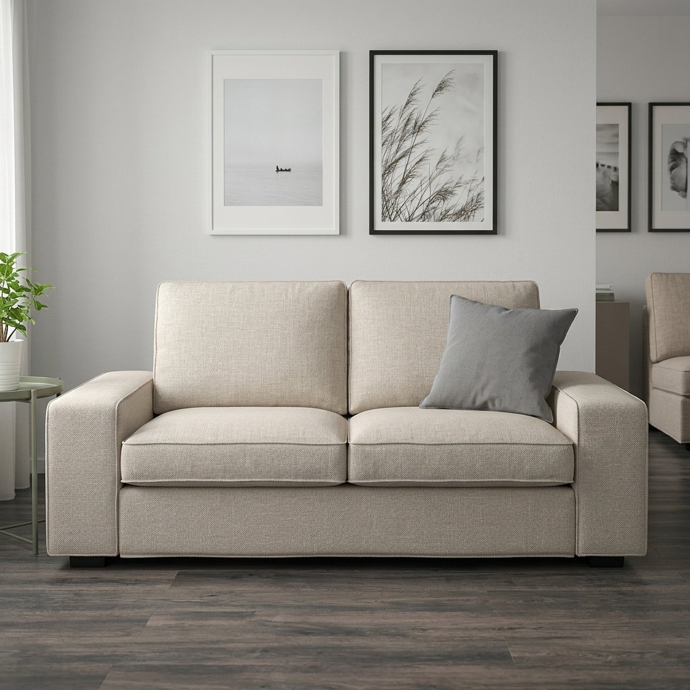

입력 레퍼런스


| 전략 | 모델 | 통과 (제품≥95 & 구도≥85) | 평균 제품점수 | 평균 구도재현 | 평균 회차 |
|---|---|---|---|---|---|
| R1 재생성 | Nano Banana Pro | 0/8 | 91 | 87 | 3.0 |
| R1 재생성 | GPT-Image | 1/8 | 93 | 82 | 3.0 |
| R2 덧그리기 | Nano Banana Pro | 0/8 | 92 | 86 | 3.0 |
| R2 덧그리기 | GPT-Image | 1/8 | 93 | 87 | 2.8 |
| R3 정합+시트 | Nano Banana Pro | 1/8 | 92 | 98 | 2.8 |
| R3 정합+시트 | GPT-Image | 4/8 | 94 | 97 | 2.9 |
| 한샘 구도 | Nano Banana Pro | GPT-Image |
|---|---|---|
 hanssem_A1 | 시도 1 · base · 생성 21s 인풋    → 아웃풋  제품 S/95 · 구도 재현 10 · 미달: 구도 QA 지적 5건
생성 결과의 소파는 전체적으로 IKEA KIVIK 2인용 소파의 실루엣, 팔걸이 형태, 쿠션 구성, 패브릭 컬러와 텍스처를 매우 충실하게 재현하였으나, 좌방석과 등받이 쿠션의 두께가 실제 제품보다 약간 더 두껍고 각이 더 뚜렷하게 표현되었습니다. 패브릭 컬러와 텍스처도 거의 유사하나, 생성 결과가 약간 더 밝고 부드러운 느낌이 있습니다. 명백한 장식 요소는 추가되지 않았으며, 봉제선과 엣지 라인은 정상적인 구조로 판단됩니다. 전체적으로 사소한 차이만 존재하여 S 등급을 부여합니다. 구도: 구도와 카메라 앵글이 완전히 다르며, 프레이밍과 소파 배치도 일치하지 않음. 시도 2 · base · 생성 17s 인풋 → 아웃풋  제품 S/95 · 구도 재현 10 · 미달: 구도 QA 지적 2건
IMAGE B의 소파는 KIVIK 2인용 소파의 전반적인 실루엣, 팔걸이의 각진 형태, 쿠션의 분리감, 패브릭 컬러와 질감 등 주요 특징을 매우 충실하게 재현하였으나, 쿠션 두께와 각도, 패브릭의 미세한 질감 등에서 약간의 차이가 관찰됩니다. 명백한 장식 요소는 추가되지 않았으며, 봉제선과 엣지 라인은 정상적인 구조로 판단됩니다. 전체적으로 제품 원형 보존이 매우 우수하나, 구도 재현도는 매우 낮습니다. 구도: 구도와 카메라 앵글, 프레이밍이 전혀 다르며, 소파 배치와 연출도 일치하지 않음. 시도 3 · base · 생성 17s 인풋 → 아웃풋  제품 A/92 · 구도 재현 98 · 미달: 제품 QA 지적 5건
생성 결과(B)는 전체적으로 IKEA KIVIK 2인용 소파의 형태, 팔걸이, 쿠션 구조, 패브릭 질감과 색상을 매우 충실하게 재현하였으나, 팔걸이의 각진 정도와 쿠션의 각, 패브릭 컬러에서 약간의 차이가 존재합니다. 봉제선이나 엣지라인 등은 정상적인 구조로, 추가 장식은 발견되지 않았습니다. 구도 재현도는 매우 높으나, 제품의 미세한 형태 및 색상 차이로 인해 95점 미만으로 평가하였습니다. 구도: 카메라 앵글과 소파의 정면 배치, 크롭이 거의 동일하게 재현됨. 최종 S/95점 · 3회 · 76s · 임계 미달 | 시도 1 · base · 생성 54s 인풋 → 아웃풋  제품 A/93 · 구도 재현 10 · 미달: 제품+구도 QA 지적 5건
생성 결과의 소파는 전체적으로 IKEA KIVIK 2인용 소파의 형태와 디테일을 잘 재현하였으나, 팔걸이 두께와 쿠션 모서리의 둥근 정도 등에서 약간의 차이가 있습니다. 패브릭 컬러와 텍스처도 거의 유사하나, 실제 제품보다 조금 더 밝고 부드럽게 표현되었습니다. 명백한 장식 요소는 추가되지 않았으며, 봉제선과 엣지 라인은 정상적으로 구현되었습니다. 그러나 미세한 형태 및 디테일 차이로 인해 95점에는 미치지 못합니다. 구도: 구도와 카메라 앵글이 전혀 다르며, 프레이밍과 소파 배치도 일치하지 않음. 시도 2 · base · 생성 58s 인풋 → 아웃풋  제품 S/95 · 구도 재현 10 · 미달: 구도 QA 지적 4건
제품의 전체적인 실루엣, 팔걸이 형태, 쿠션 구성, 패브릭 컬러와 질감이 레퍼런스와 거의 동일하게 재현되었습니다. 다만, 쿠션 두께와 팔걸이 엣지의 미세한 차이, 패브릭의 밝기 차이 등 사소한 차이가 존재하지만, 이는 사진 노이즈 수준의 미미한 차이로 판단됩니다. 명백한 장식 요소는 추가되지 않았으며, 봉제선과 엣지 라인은 정상적인 구조로 간주됩니다. 구도: 구도와 카메라 앵글이 완전히 다르며, 프레이밍과 소파 배치가 일치하지 않음. 시도 3 · base · 생성 49s 인풋 → 아웃풋  제품 A/94 · 구도 재현 10 · 미달: 제품+구도 QA 지적 5건
전체적으로 IKEA KIVIK 2인용 소파의 형태, 팔걸이, 쿠션, 패브릭 컬러와 텍스처가 잘 재현되었으나, 팔걸이의 각도와 두께, 쿠션의 두께 등에서 미세한 차이가 존재합니다. 패브릭 컬러와 텍스처도 거의 유사하지만, 생성 결과가 약간 더 밝고 부드럽게 표현되었습니다. 명백한 장식 요소는 추가되지 않았으며, 봉제선과 엣지라인은 정상적으로 구현되었습니다. 그러나 구도 재현도는 매우 낮아 composition_match 점수가 크게 감점되었습니다. 구도: 구도와 카메라 앵글이 전혀 다르며, 프레이밍과 소파 배치가 일치하지 않음. 최종 S/95점 · 3회 · 184s · 임계 미달 |
 hanssem_A2 | 시도 1 · base · 생성 19s 인풋 → 아웃풋  제품 A/91 · 구도 재현 98 · 미달: 제품 QA 지적 4건
전체적으로 IKEA KIVIK 2인용 소파의 형태와 디테일을 잘 재현하였으나, 실루엣이 약간 더 낮고 넓게 표현되었고, 팔걸이와 쿠션의 각진 정도 및 곡선이 미세하게 다릅니다. 패브릭 질감도 실제보다 조금 더 부드럽게 묘사되어 있습니다. 색상과 장식 요소는 충실하게 재현되었으며, 명백한 장식 추가는 없습니다. 구도는 거의 완벽하게 일치하나, 제품 형태의 미세한 차이로 인해 최고 점수에는 미치지 못합니다. 구도: 카메라 앵글, 프레이밍, 소파 배치, 주변 소품 위치까지 거의 완벽하게 재현됨. 시도 2 · base · 생성 21s 인풋 → 아웃풋  제품 A/92 · 구도 재현 99 · 미달: 제품 QA 지적 5건
전체적으로 IKEA KIVIK 2인용 소파의 형태와 디테일을 매우 충실하게 재현하였으나, 등받이 쿠션의 두께와 각, 패브릭 텍스처의 미세한 차이, 컬러의 약간의 색감 차이가 존재합니다. 팔걸이와 쿠션의 구조적 특징은 잘 반영되었으며, 불필요한 장식 요소는 추가되지 않았습니다. 다만, 실제 제품의 직조감과 쿠션의 각진 느낌이 약간 부족하여 만점에는 미치지 못합니다. 구도: 카메라 앵글, 프레이밍, 소파 배치, 주변 소품 위치까지 거의 완벽하게 재현됨. 시도 3 · base · 생성 20s 인풋 → 아웃풋  제품 A/91 · 구도 재현 98 · 미달: 제품 QA 지적 5건
생성 결과의 소파는 전반적으로 KIVIK 2인용 소파의 특징을 잘 반영하였으나, 실루엣이 실제 제품보다 더 낮고 넓게 표현되어 비율에서 약간의 차이가 있습니다. 팔걸이와 쿠션의 형태도 실제 제품과 비교했을 때 미세한 차이가 있으며, 패브릭 컬러와 텍스처 역시 거의 유사하지만 약간의 색감 및 질감 차이가 존재합니다. 명백한 장식 요소는 추가되지 않았으나, 이러한 형태 및 비율의 차이로 인해 최고 점수에는 미치지 못했습니다. 구도 재현도는 거의 완벽합니다. 구도: 카메라 앵글, 프레이밍, 소파 배치, 주변 소품 위치까지 거의 완벽하게 재현됨. 최종 A/92점 · 3회 · 83s · 임계 미달 | 시도 1 · base · 생성 59s 인풋 → 아웃풋  제품 A/91 · 구도 재현 99 · 미달: 제품 QA 지적 5건
전체적으로 IKEA KIVIK 2인용 소파의 형태와 디테일을 잘 재현하였으나, 팔걸이 두께와 쿠션 모서리의 각짐, 패브릭 텍스처의 미세한 차이 등에서 실제 제품과 약간의 차이가 존재합니다. 색상도 거의 유사하나 미묘하게 밝은 톤으로 표현되었습니다. 명백한 장식 요소는 추가되지 않았으며, 봉제선과 엣지라인은 정상적으로 구현되었습니다. 구도 재현도는 거의 완벽합니다. 구도: 카메라 앵글, 프레이밍, 소파 배치, 주변 소품 위치까지 거의 완벽하게 재현됨. 시도 2 · base · 생성 57s 인풋 → 아웃풋  제품 A/91 · 구도 재현 98 · 미달: 제품 QA 지적 5건
전체적으로 IKEA KIVIK 2인용 소파의 형태와 비율, 색상, 쿠션 구조를 잘 재현하였으나, 팔걸이의 두께와 각진 정도, 쿠션의 각짐, 패브릭 텍스처의 미세한 차이 등에서 실제 제품과 약간의 차이가 존재합니다. 명백한 장식 요소는 추가되지 않았으며, 봉제선과 엣지라인은 정상적으로 표현되었습니다. 구도 재현도는 매우 높으나, 제품 자체의 디테일 차이로 인해 95점 이상에는 미치지 못합니다. 구도: 카메라 앵글, 프레이밍, 소파 배치, 소품 위치 등 거의 완벽하게 재현됨. 시도 3 · base · 생성 79s 인풋 → 아웃풋  제품 A/93 · 구도 재현 99 · 미달: 제품 QA 지적 5건
생성 결과(B)는 전체적으로 IKEA KIVIK 2인용 소파의 형태와 디테일을 매우 충실하게 재현하였으나, 팔걸이 두께와 쿠션 모서리의 둥근 정도 등에서 미세한 차이가 있습니다. 패브릭 컬러와 텍스처도 거의 유사하나, 실제 제품 대비 약간 더 밝고 부드럽게 표현되었습니다. 명백한 장식 요소는 추가되지 않았으며, 봉제선과 엣지라인은 정상적으로 구현되었습니다. 구도 재현도는 거의 완벽하나, 제품의 미세한 형태 차이로 인해 95점 미만으로 평가하였습니다. 구도: 카메라 앵글, 프레이밍, 소파 배치, 주변 소품 위치까지 거의 완벽하게 재현됨. 최종 A/93점 · 3회 · 218s · 임계 미달 |
 hanssem_B1 | 시도 1 · base · 생성 22s 인풋 → 아웃풋  제품 A/85 · 구도 재현 98 · 미달: 제품 QA 지적 4건
전체적인 실루엣과 비율, 팔걸이 형태, 쿠션 구성 등은 KIVIK과 유사하나, 다리 디자인이 명확히 다르고 쿠션의 두께와 모서리 라인이 KIVIK 특유의 둥근 느낌보다 더 각지고 얇게 표현되었습니다. 패브릭 컬러와 질감은 거의 유사하나, 미세한 차이가 있습니다. 명백한 장식 요소는 없으며, 봉제선과 엣지 라인은 정상 범위입니다. 다리 디자인 차이와 쿠션 형태 차이로 인해 감점이 발생하였으며, 제품 충실도가 95점 미만으로 pass 기준에 미달합니다. 구도: 카메라 앵글, 프레이밍, 소품 배치, 크롭이 거의 동일하게 재현됨. 시도 2 · base · 생성 18s 인풋 → 아웃풋  제품 A/92 · 구도 재현 98 · 미달: 제품 QA 지적 5건
전체적으로 KIVIK 2인용 소파의 형태와 디테일을 잘 재현하였으나, 팔걸이 두께와 쿠션의 각진 형태, 다리 노출 등에서 미세한 차이가 존재합니다. 패브릭 컬러와 텍스처도 거의 유사하나, 약간의 색감 및 질감 차이가 있습니다. 명백한 장식 요소는 추가되지 않았으며, 봉제선과 엣지라인은 정상적으로 구현되었습니다. 구도는 거의 완벽하게 일치하나, 제품 자체의 미세한 차이로 인해 95점 미만으로 평가합니다. 구도: 카메라 앵글, 프레이밍, 소품 배치, 바닥 러그 등 거의 완벽하게 재현됨. 시도 3 · base · 생성 17s 인풋 → 아웃풋  제품 A/88 · 구도 재현 98 · 미달: 제품 QA 지적 6건
전체적으로 IKEA KIVIK 2인용 소파의 형태와 디테일을 잘 재현하였으나, 실루엣이 약간 더 낮고 넓게 표현되었고, 팔걸이와 쿠션의 각진 느낌이 다소 약화되어 있다. 패브릭 컬러와 텍스처도 미세하게 차이가 있으며, 좌방석 하단의 봉제선이 실제 제품보다 더 강조되어 있다. 명백한 장식 요소는 없으나, 위 차이점들로 인해 95점 이상에는 미치지 못함. 구도: 카메라 앵글, 프레이밍, 소파 배치, 주변 소품 위치까지 거의 완벽하게 일치함. 최종 A/92점 · 3회 · 77s · 임계 미달 | 시도 1 · base · 생성 61s 인풋 → 아웃풋  제품 A/92 · 구도 재현 98 · 미달: 제품 QA 지적 5건
생성 결과(B)는 전체적으로 IKEA KIVIK 2인용 소파의 형태와 디테일을 잘 재현하였으나, 팔걸이의 두께와 높이, 방석 두께, 등받이 쿠션의 상단 라인 등에서 미세한 차이가 존재합니다. 패브릭 컬러와 텍스처도 거의 유사하나, 약간의 색감 차이와 질감의 균일함이 관찰됩니다. 명백한 장식 요소는 추가되지 않았으며, 봉제선과 엣지라인은 정상적으로 표현되었습니다. 구도 재현도는 거의 완벽하나, 제품 충실도에서 소폭 감점되어 95점 미만으로 'retry' 판정입니다. 구도: 카메라 앵글, 프레이밍, 소파 배치, 소품 위치까지 거의 완벽하게 재현됨. 시도 2 · base · 생성 48s 인풋 → 아웃풋  제품 A/92 · 구도 재현 98 · 미달: 제품 QA 지적 4건
전체적으로 IKEA KIVIK 2인용 소파의 형태와 디테일을 잘 재현하였으나, 다리의 두께와 길이, 팔걸이의 각도, 쿠션의 각진 형태 등에서 미세한 차이가 존재합니다. 패브릭 질감도 실제 제품보다 약간 더 인공적으로 표현되어 있습니다. 하지만 명백한 장식 요소는 추가되지 않았으며, 전반적인 제품 충실도는 높으나 95점 이상을 주기에는 소소하지만 눈에 띄는 차이가 있습니다. 구도: 카메라 앵글, 프레이밍, 소파 배치, 소품 위치가 거의 완벽하게 일치함. 시도 3 · base · 생성 46s 인풋 → 아웃풋  제품 A/93 · 구도 재현 98 · 미달: 제품 QA 지적 5건
전체적으로 IKEA KIVIK 2인용 소파의 형태와 디테일을 매우 충실하게 재현하였으나, 다리의 형태와 색상, 팔걸이의 두께, 쿠션의 각짐 등에서 미세한 차이가 존재합니다. 패브릭 컬러와 텍스처도 거의 유사하나, 실제 제품 대비 약간 더 밝고 균일하게 표현되었습니다. 명백한 장식 요소는 추가되지 않았으며, 봉제선과 엣지라인은 정상적으로 구현되었습니다. 구도 재현도는 거의 완벽하나, 제품 자체의 미세한 차이로 인해 95점 미만으로 평가합니다. 구도: 카메라 앵글, 프레이밍, 소품 배치, 러그 위치 등 거의 완벽하게 일치함. 최종 A/93점 · 3회 · 179s · 임계 미달 |
 hanssem_B2 | 시도 1 · base · 생성 19s 인풋 → 아웃풋  제품 A/93 · 구도 재현 55 · 미달: 제품+구도 QA 지적 5건
전체적으로 KIVIK 2인용 소파의 형태와 주요 특징을 잘 재현하였으나, 등받이 쿠션의 두께와 각, 팔걸이의 모서리 라인, 패브릭의 색감과 질감에서 미세한 차이가 존재합니다. 명백한 장식 요소는 없으나, 실제 제품의 날카로운 각과 텍스처가 약간 덜 표현되어 점수가 소폭 감점되었습니다. 구도: 카메라 각도와 프레이밍이 다르며, 소파의 배치와 크롭이 구도 레퍼런스와 일치하지 않음. 시도 2 · base · 생성 22s 인풋 → 아웃풋  제품 A/94 · 구도 재현 98 · 미달: 제품 QA 지적 5건
전체적으로 IKEA KIVIK 2인용 소파의 형태, 팔걸이, 쿠션 구조, 패브릭 컬러와 텍스처가 매우 충실하게 재현되었으나, 실루엣이 약간 더 낮고 넓어 보이며, 좌방석 쿠션이 조금 더 각지고 평평하게 표현된 점, 그리고 패브릭 컬러가 미세하게 더 밝고 노란빛이 도는 점이 감점 요인입니다. 봉제선이나 엣지라인 등은 정상적인 구조로, 추가 장식은 발견되지 않았습니다. 구도 재현도는 거의 완벽합니다. 구도: 카메라 앵글, 프레이밍, 소파 배치가 거의 완벽하게 일치함. 시도 3 · base · 생성 18s 인풋 → 아웃풋  제품 A/94 · 구도 재현 98 · 미달: 제품 QA 지적 4건
생성 결과(B)는 전반적으로 IKEA KIVIK 2인용 소파의 형태와 디테일을 잘 재현하였으나, 팔걸이 두께, 쿠션 모서리의 둥근 처리, 등받이 쿠션의 높이 등에서 미세한 차이가 존재합니다. 패브릭 컬러와 텍스처는 매우 유사하며, 불필요한 장식 요소는 추가되지 않았습니다. 전체적으로 실제 제품과의 차이는 미세하지만, 형태적 차이가 명확히 식별되어 94점으로 A등급을 부여합니다. 구도: 카메라 앵글, 프레이밍, 소파 배치가 거의 완벽하게 일치함. 최종 A/94점 · 3회 · 82s · 임계 미달 | 시도 1 · base · 생성 47s 인풋 → 아웃풋  제품 A/94 · 구도 재현 98 · 미달: 제품 QA 지적 4건
전체적으로 IKEA KIVIK 2인용 소파의 형태, 비율, 색상, 질감이 매우 충실하게 재현되었으나, 팔걸이 두께와 쿠션 모서리의 각진 정도에서 미세한 차이가 있음. 패브릭 질감도 실제보다 약간 더 부드럽게 표현되어 있음. 명백한 장식 요소는 추가되지 않았으며, 봉제선과 엣지 라인은 정상적으로 구현됨. 구도는 거의 완벽하게 일치하나, 제품의 미세한 형태 차이로 인해 1점 감점되어 94점으로 A등급 판정. 구도: 카메라 앵글, 프레이밍, 소파 배치, 주변 소품까지 거의 완벽하게 재현됨. 시도 2 · base · 생성 52s 인풋 → 아웃풋  제품 A/94 · 구도 재현 98 · 미달: 제품 QA 지적 5건
전체적으로 IKEA KIVIK 2인용 소파의 형태와 구조를 매우 충실하게 재현하였으나, 좌방석의 두께와 돌출감, 쿠션의 각진 형태, 패브릭 컬러의 미세한 차이, 텍스처의 매끈함 등에서 실제 제품과 약간의 차이가 존재합니다. 명백한 장식 요소는 추가되지 않았으며, 봉제선과 엣지라인은 정상적으로 구현되었습니다. 구도 재현도는 매우 높으나, 제품의 미세한 형태 및 질감 차이로 인해 95점 미만으로 평가하였습니다. 구도: 카메라 앵글, 프레이밍, 소파 배치, 배경 소품까지 거의 완벽하게 재현됨. 시도 3 · base · 생성 51s 인풋 → 아웃풋  제품 A/93 · 구도 재현 98 · 미달: 제품 QA 지적 6건
전체적으로 KIVIK 2인용 소파의 형태, 팔걸이, 쿠션 구조, 패브릭 컬러와 텍스처가 매우 유사하게 재현되었으나, 좌방석의 두께와 돌출, 등받이 쿠션의 높이·두께, 패브릭의 미세한 톤 차이 등에서 실제 제품과 약간의 차이가 존재합니다. 봉제선과 엣지 라인은 정상 구조로 감점 사유가 아니며, 명백한 장식 요소는 추가되지 않았습니다. 구도 재현도는 거의 완벽하나, 제품 충실도에서 소폭 차이로 95점 미만이므로 pass 조건을 충족하지 못합니다. 구도: 카메라 앵글, 프레이밍, 소파 배치, 배경 소품까지 거의 완벽하게 재현됨. 최종 A/94점 · 3회 · 173s · 임계 미달 |
 hanssem_B3 | 시도 1 · base · 생성 20s 인풋 → 아웃풋  제품 A/88 · 구도 재현 97 · 미달: 제품 QA 지적 5건
전체적으로 KIVIK 2인용 소파의 형태와 디테일을 잘 재현하였으나, 실루엣이 약간 더 낮고 넓으며, 팔걸이의 두께와 각도가 미세하게 다르고, 쿠션 비율 및 패브릭 컬러·텍스처에서 소폭 차이가 있습니다. 명백한 장식 요소는 없으며, 봉제선과 엣지라인은 정상적으로 구현되었습니다. 구도는 거의 완벽하게 일치하나, 제품 자체의 미묘한 차이로 인해 95점 이상에는 미치지 못합니다. 구도: 카메라 앵글, 인물 위치, 프레이밍이 거의 동일하게 재현됨. 시도 2 · base · 생성 16s 인풋 → 아웃풋  제품 A/88 · 구도 재현 97 · 미달: 제품 QA 지적 6건
전체적으로 KIVIK 2인용 소파의 형태와 디테일을 잘 재현하였으나, 실루엣이 약간 더 낮고 넓으며, 팔걸이와 쿠션의 두께·비율에서 미세한 차이가 있습니다. 패브릭 컬러와 텍스처도 실제 제품과 약간의 차이가 존재합니다. 명백한 장식 요소는 없으며, 봉제선과 엣지라인은 정상적으로 표현되었습니다. 구도는 거의 완벽하게 일치하나, 제품 재현도에서 의미 있는 차이가 있어 88점, A등급으로 평가합니다. 구도: 카메라 앵글, 인물 위치, 소파 배치가 거의 동일하게 재현됨. 시도 3 · base · 생성 16s 인풋 → 아웃풋  제품 C/71 · 구도 재현 97 · 미달: 제품 QA 지적 6건
B의 소파는 전반적으로 KIVIK의 디자인 언어를 따르나, 좌방석과 등쿠션 개수가 3개로 늘어나 2인용 KIVIK과 명확히 다르며, 팔걸이와 쿠션의 비율, 실루엣이 다소 다름. 패브릭 색상과 질감은 유사하나 완전히 동일하지 않음. 명백한 장식 요소는 없으나, 제품의 핵심 구조와 비율 차이로 인해 감점이 큼. 구도: 카메라 앵글, 인물 포즈, 프레이밍, 배경 소품 위치까지 거의 동일하게 재현됨. 최종 A/88점 · 3회 · 76s · 임계 미달 | 시도 1 · base · 생성 51s 인풋 → 아웃풋  제품 A/91 · 구도 재현 97 · 미달: 제품 QA 지적 5건
전체적으로 IKEA KIVIK 2인용 소파의 형태와 디테일을 잘 재현하였으나, 하단부 두께와 다리 노출, 팔걸이 두께 등에서 미세한 차이가 존재합니다. 쿠션의 각도와 높이도 약간 다르며, 패브릭 색상과 질감 역시 근소한 차이가 있습니다. 명백한 장식 요소는 추가되지 않았으나, 이러한 세부 차이로 인해 S 등급에는 미치지 못합니다. 구도: 카메라 앵글, 인물 위치, 프레이밍이 거의 동일하게 재현됨. 시도 2 · base · 생성 64s 인풋 → 아웃풋  제품 A/91 · 구도 재현 97 · 미달: 제품 QA 지적 5건
소파의 전체적인 형태, 팔걸이, 쿠션 구성 등은 IKEA KIVIK 2인용 소파의 특징을 잘 반영하고 있습니다. 다만 등받이 쿠션의 두께와 팔걸이의 비율이 실제 제품보다 약간 두껍게 표현되었고, 패브릭 텍스처의 미세한 직조감이 다소 약하게 묘사되었습니다. 색상은 거의 일치하나, 조명 영향으로 약간 밝게 보입니다. 명백한 장식 요소는 추가되지 않았으며, 봉제선과 엣지라인은 정상적으로 구현되었습니다. 구도 재현도는 매우 높으나, 제품 디테일에서 소폭 차이가 있어 95점 미만으로 평가합니다. 구도: 카메라 앵글, 인물 위치, 프레이밍이 거의 동일하게 재현됨. 시도 3 · base · 생성 64s 인풋 → 아웃풋  제품 A/90 · 구도 재현 97 · 미달: 제품 QA 지적 5건
전체적으로 KIVIK 2인용 소파의 형태와 디테일을 잘 재현하였으나, 실루엣이 약간 더 낮고 넓으며, 팔걸이 두께와 각도가 미세하게 다릅니다. 쿠션 비율과 패브릭 텍스처도 실제 제품과 약간의 차이가 있습니다. 그러나 명백한 장식 요소는 없으며, 봉제선과 엣지라인은 정상적으로 구현되었습니다. 색상은 거의 유사하나 약간 더 밝은 톤입니다. 전반적으로 제품의 주요 특징은 잘 반영되었으나, 미세한 형태 및 디테일 차이로 인해 S 등급에는 미치지 못합니다. 구도: 카메라 앵글, 인물 위치, 프레이밍이 거의 동일하게 재현됨. 최종 A/91점 · 3회 · 207s · 임계 미달 |
 hanssem_B4 | 시도 1 · base · 생성 18s 인풋 → 아웃풋  제품 A/92 · 구도 재현 99 · 미달: 제품 QA 지적 5건
전체적으로 IKEA KIVIK 2인용 소파의 형태와 디테일을 매우 충실하게 재현하였으나, 실루엣이 약간 더 낮고 넓게 표현되었고, 팔걸이와 쿠션의 각진 정도, 패브릭 색상과 텍스처에서 미세한 차이가 존재합니다. 봉제선이나 엣지라인 등은 정상적으로 구현되어 있으며, 명백한 장식 요소는 추가되지 않았습니다. 구도 재현도는 거의 완벽하나, 제품 자체의 미묘한 비율 및 디테일 차이로 인해 95점 미만으로 평가하였습니다. 구도: 카메라 앵글, 프레이밍, 소파 배치, 소품 위치까지 거의 완벽하게 일치함. 시도 2 · base · 생성 16s 인풋 → 아웃풋  제품 A/92 · 구도 재현 98 · 미달: 제품 QA 지적 5건
전체적으로 IKEA KIVIK 2인용 소파의 형태와 디테일을 잘 재현하였으나, 실루엣이 약간 더 낮고 넓게 표현되었고, 팔걸이와 쿠션의 각진 느낌이 다소 약화되어 있다. 패브릭 색상과 질감도 미세하게 차이가 있으나, 전반적으로 실제 제품의 특징을 잘 반영하였다. 명백한 장식 요소는 추가되지 않았으며, 봉제선과 엣지라인은 정상적으로 구현됨. 구도 재현도는 거의 완벽하다. 구도: 카메라 앵글, 프레이밍, 소파 배치, 소품 위치까지 거의 완벽하게 재현됨. 시도 3 · base · 생성 19s 인풋 → 아웃풋  제품 A/90 · 구도 재현 98 · 미달: 제품 QA 지적 5건
전체적으로 IKEA KIVIK 2인용 소파의 형태와 디테일을 잘 재현하였으나, 실루엣과 팔걸이, 쿠션의 두께 및 모서리 라인에서 미세한 차이가 있습니다. 패브릭 컬러와 텍스처도 약간의 차이가 존재합니다. 하지만 명백한 장식 요소는 추가되지 않았으며, 봉제선과 엣지 라인은 정상적으로 표현되었습니다. 구도 재현도는 매우 높으나, 제품 자체의 미세한 차이로 인해 95점 이상에는 미치지 못합니다. 구도: 카메라 앵글, 프레이밍, 소파 배치, 소품 위치 등 거의 완벽하게 재현됨. 최종 A/92점 · 3회 · 77s · 임계 미달 | 시도 1 · base · 생성 50s 인풋 → 아웃풋  제품 A/93 · 구도 재현 98 · 미달: 제품 QA 지적 5건
전체적으로 IKEA KIVIK 2인용 소파의 형태와 디테일을 매우 충실하게 재현하였으나, 등받이 쿠션의 높이와 좌방석 모서리의 둥근 정도, 팔걸이의 각진 느낌 등에서 미세한 차이가 존재합니다. 패브릭 컬러와 텍스처도 거의 유사하지만, 실제 제품 대비 약간 더 밝고 부드럽게 표현되었습니다. 명백한 장식 요소는 추가되지 않았으며, 봉제선과 엣지라인은 정상적으로 구현되었습니다. 구도 재현도는 거의 완벽하나, 제품의 미세한 형태 차이로 인해 95점 미만으로 평가하였습니다. 구도: 카메라 앵글, 프레이밍, 소파 배치, 소품 위치까지 거의 완벽하게 재현됨. 시도 2 · base · 생성 46s 인풋 → 아웃풋  제품 A/92 · 구도 재현 98 · 미달: 제품 QA 지적 5건
생성 결과(B)는 전체적으로 IKEA KIVIK 2인용 소파의 형태와 디테일을 매우 충실하게 재현하였으나, 팔걸이의 두께와 각진 정도, 쿠션의 각진 표현 등에서 미세한 차이가 존재합니다. 패브릭 컬러와 텍스처도 거의 유사하나, 약간의 밝기와 질감 차이가 있습니다. 명백한 장식 요소는 추가되지 않았으며, 봉제선과 엣지라인은 정상적으로 표현되었습니다. 구도 재현도는 거의 완벽하나, 제품 자체의 미세한 형태 차이로 인해 95점 미만으로 평가하였습니다. 구도: 카메라 앵글, 프레이밍, 소파 배치, 소품 위치까지 거의 완벽하게 재현됨. 시도 3 · base · 생성 52s 인풋 → 아웃풋  제품 S/95 · 구도 재현 98 ✓ 통과 QA 지적 4건
전체적으로 KIVIK 2인용 소파의 실루엣, 팔걸이, 쿠션 구성, 패브릭 컬러와 질감이 매우 충실하게 재현되었으며, 봉제선이나 엣지라인 등은 정상적인 구조로 판단됨. 다리 형태와 쿠션 두께 등에서 미세한 차이가 있으나, 실제 제품 인식에 영향을 줄 정도는 아님. 명백한 장식 요소는 추가되지 않았으므로 감점 사유가 없으며, 구도 역시 거의 완벽하게 일치하여 S등급 판정이 적합함. 구도: 카메라 앵글, 프레이밍, 소파 배치, 소품 위치까지 거의 완벽하게 재현됨. 최종 S/95점 · 3회 · 171s · 통과 |
 hanssem_B5 | 시도 1 · base · 생성 20s 인풋 → 아웃풋  제품 B/77 · 구도 재현 98 · 미달: 제품 QA 지적 7건
생성 결과 소파는 KIVIK 2인용 소파의 전형적인 2인용 비율이 아니라 3인용처럼 길고, 좌방석이 3개로 보입니다. 팔걸이와 전체적인 각진 형태는 유사하나, 등받이와 방석 쿠션의 두께·비율이 다르고, 패브릭 텍스처가 실제 KIVIK보다 덜 뚜렷합니다. 색상은 유사하나 약간 밝은 편입니다. 명백한 장식 요소는 없으나, 제품의 핵심 구조와 비율 차이가 커서 높은 점수를 줄 수 없습니다. 구도: 카메라 앵글, 프레이밍, 인물 포즈, 소품 배치 등 거의 동일하게 재현됨. 시도 2 · base · 생성 16s 인풋 → 아웃풋  제품 B/76 · 구도 재현 98 · 미달: 제품 QA 지적 8건
B의 소파는 전체적인 컬러, 팔걸이 형태, 패브릭 질감 등은 KIVIK과 유사하나, 좌석 수가 2인용이 아닌 3인용 이상으로 보이고, 등받이 쿠션의 높이와 두께, 좌방석의 비율 등 주요 실루엣과 프로포션에서 차이가 큽니다. 쿠션 디테일과 봉제선 등은 정상적으로 구현되어 감점 사유가 아니나, 제품의 핵심 형태와 비율에서 KIVIK과의 차이가 명확하여 높은 점수를 줄 수 없습니다. 구도 재현도는 거의 완벽합니다. 구도: 카메라 앵글, 프레이밍, 인물 배치, 소품 위치 등 거의 완벽하게 재현됨. 시도 3 · base · 생성 18s 인풋 → 아웃풋  제품 B/79 · 구도 재현 98 · 미달: 제품 QA 지적 6건
소파의 전체적인 실루엣과 팔걸이 형태는 KIVIK과 유사하나, 좌방석과 등받이 쿠션이 3개로 분리되어 있어 2인용 KIVIK의 특징과 다릅니다. 패브릭 컬러와 텍스처는 실제 제품과 거의 유사하나, 약간의 색상 차이와 질감의 부드러움이 있습니다. 명백한 장식 요소는 없으며, 봉제선과 엣지라인은 정상 범주입니다. 구도 재현도는 매우 높으나, 제품 구조의 차이로 인해 점수가 낮아졌습니다. 구도: 카메라 앵글, 인물 위치, 소파 배치, 프레이밍이 거의 동일하게 재현됨. 최종 B/79점 · 3회 · 83s · 임계 미달 | 시도 1 · base · 생성 53s 인풋 → 아웃풋  제품 A/91 · 구도 재현 97 · 미달: 제품 QA 지적 5건
전체적으로 KIVIK 2인용 소파의 형태와 디테일을 잘 재현하였으나, 등받이 쿠션의 두께와 높이, 좌방석의 모서리 라인, 패브릭 텍스처의 미세한 차이 등에서 실제 제품과 약간의 차이가 존재합니다. 색상은 거의 일치하나, 생성 결과가 조금 더 밝고 균일하게 표현되었습니다. 명백한 장식 요소는 추가되지 않았으며, 봉제선과 엣지 라인은 정상적으로 구현되었습니다. 구도 재현도는 매우 높으나, 제품의 미세한 형태 및 질감 차이로 인해 95점 미만으로 평가하였습니다. 구도: 카메라 앵글, 프레이밍, 소파 배치가 거의 동일하게 재현됨. 시도 2 · base · 생성 58s 인풋 → 아웃풋  제품 A/92 · 구도 재현 97 · 미달: 제품 QA 지적 5건
전체적으로 IKEA KIVIK 2인용 소파의 형태와 디테일을 잘 재현하였으나, 등받이 쿠션의 두께와 볼륨감이 실제 제품보다 약간 얇고 덜 입체적으로 표현됨. 팔걸이의 각도와 두께는 거의 일치하나, 생성 이미지에서 팔걸이 상단이 조금 더 각진 느낌이 있음. 패브릭 컬러는 거의 동일하나, 생성 이미지가 약간 더 밝고 미세하게 노란빛이 도는 차이가 있음. 패브릭 텍스처의 미세한 직조감이 실제 제품보다 덜 표현되어 있음. 명백한 장식 요소는 추가되지 않았으며, 봉제선과 엣지라인은 정상적인 구조로 판단됨. 구도 재현도는 매우 높음. 구도: 카메라 앵글, 프레이밍, 소파 배치가 거의 동일하게 재현됨. 시도 3 · base · 생성 56s 인풋 → 아웃풋  제품 B/84 · 구도 재현 97 · 미달: 제품 QA 지적 7건
생성된 소파는 전체적인 실루엣과 팔걸이 형태, 패브릭 컬러와 텍스처 등에서 KIVIK 2인용 소파와 매우 유사하나, 좌방석과 등쿠션의 개수가 3개로 표현되어 제품의 핵심 구조가 다릅니다. 또한 소파의 길이와 비율이 실제 2인용보다 더 길고, 쿠션의 비율도 약간 다르게 보입니다. 명백한 장식 요소는 없으나, 이러한 구조적 차이로 인해 점수가 감점되었습니다. 구도 재현도는 매우 우수합니다. 구도: 카메라 앵글, 인물 포즈, 소파 배치, 프레이밍이 거의 동일하게 재현됨. 최종 A/92점 · 3회 · 194s · 임계 미달 |
 hanssem_B6 | 시도 1 · base · 생성 18s 인풋 → 아웃풋  제품 A/90 · 구도 재현 97 · 미달: 제품 QA 지적 6건
전체적으로 KIVIK 2인용 소파의 형태와 구조, 패브릭 질감, 봉제선 등 주요 특징이 잘 재현되었으나, 등받이 쿠션의 두께와 높이, 팔걸이의 각진 느낌, 패브릭 컬러의 미세한 차이 등에서 실제 제품과 약간의 차이가 존재합니다. 명백한 장식 요소는 없으며, 봉제선과 엣지 라인은 정상적인 구조로 판단됩니다. 구도 재현도는 매우 높으나, 제품의 세부 디테일에서 미묘한 차이로 인해 S 등급에는 미치지 못합니다. 구도: 카메라 앵글, 프레이밍, 소파 배치, 주변 소품 위치까지 거의 완벽하게 재현됨. 시도 2 · base · 생성 20s 인풋 → 아웃풋  제품 A/89 · 구도 재현 98 · 미달: 제품 QA 지적 6건
전체적으로 KIVIK 2인용 소파의 형태와 디테일을 잘 재현했으나, 실루엣이 약간 더 낮고 길며, 팔걸이와 쿠션의 두께 및 봉제선 위치에서 미세한 차이가 있습니다. 패브릭 컬러와 텍스처도 거의 유사하지만 약간의 색감 및 질감 차이가 존재합니다. 명백한 장식 요소는 없으며, 봉제선은 정상 구조로 판단되어 감점 사유가 아닙니다. 구도 재현도는 매우 높으나, 제품 자체의 미세한 차이로 인해 S 등급에는 미치지 못합니다. 구도: 카메라 앵글, 프레이밍, 소파 배치, 소품 위치까지 거의 완벽하게 재현됨. 시도 3 · base · 생성 14s 인풋 → 아웃풋  제품 A/93 · 구도 재현 98 · 미달: 제품 QA 지적 5건
소파의 전체적인 실루엣, 팔걸이 형태, 쿠션 구성, 패브릭 컬러와 텍스처 모두 레퍼런스와 매우 유사하게 재현되었으나, 등받이 쿠션의 두께와 각이 레퍼런스보다 약간 더 두드러지게 표현되어 미세한 차이가 있음. 패브릭 컬러와 텍스처도 거의 동일하나, 조명 영향으로 약간 밝고 매끈하게 보임. 명백한 장식 요소는 없으며, 봉제선과 엣지라인은 정상 구조로 판단됨. 전체적으로 매우 높은 충실도를 보이나, 95점 이상에 해당하는 '사진 노이즈 수준'의 미세 차이보다는 약간 더 눈에 띄는 차이가 있어 93점, A등급으로 평가함. 구도: 카메라 앵글, 프레이밍, 소파 배치가 거의 완벽하게 일치함. 최종 A/93점 · 3회 · 81s · 임계 미달 | 시도 1 · base · 생성 53s 인풋 → 아웃풋  제품 A/91 · 구도 재현 93 · 미달: 제품 QA 지적 5건
전체적으로 KIVIK 2인용 소파의 형태와 구조, 봉제선, 팔걸이 등 주요 특징을 잘 재현하였으나, 등받이 쿠션의 두께와 높이, 패브릭 컬러와 텍스처에서 미세한 차이가 존재합니다. 명백한 장식 요소는 추가되지 않았으며, 봉제선과 엣지라인은 정상적으로 구현되었습니다. 구도 역시 거의 동일하게 재현되었으나, 제품의 세부 디테일에서 약간의 차이로 인해 S 등급에는 미치지 못합니다. 구도: 카메라 각도와 소파 배치, 주변 소품의 위치까지 거의 동일하게 재현됨. 시도 2 · base · 생성 51s 인풋 → 아웃풋  제품 A/91 · 구도 재현 97 · 미달: 제품 QA 지적 5건
전체적으로 IKEA KIVIK 2인용 소파의 형태와 구조를 잘 재현하였으나, 등받이 쿠션의 두께와 높이가 실제 제품보다 약간 더 두껍고 높게 표현되어 비율에서 미세한 차이가 있습니다. 팔걸이와 쿠션의 모서리 라인도 실제보다 조금 더 각지고 뚜렷하게 나타나며, 패브릭 컬러는 실제보다 약간 더 밝고 차가운 톤입니다. 텍스처 역시 실제 제품의 미세한 직조감이 덜 표현되어 있습니다. 명백한 장식 요소는 추가되지 않았으나, 위와 같은 미세한 차이로 인해 95점 이상에는 미치지 못합니다. 구도: 카메라 앵글, 프레이밍, 소파 배치, 소품 위치 등 거의 완벽하게 재현됨. 시도 3 · base · 생성 62s 인풋 → 아웃풋  제품 A/93 · 구도 재현 62 · 미달: 제품+구도 QA 지적 5건
전체적으로 KIVIK 2인용 소파의 형태와 디테일을 잘 재현하였으나, 등받이 쿠션의 두께와 높이, 팔걸이의 각진 느낌, 패브릭 텍스처의 미세한 차이 등에서 레퍼런스와 약간의 차이가 존재합니다. 색상은 거의 일치하나, 생성 결과가 조금 더 밝고 균일하게 표현되었습니다. 명백한 장식 요소는 없으며, 봉제선과 엣지라인은 정상적으로 구현되었습니다. 구도는 레퍼런스 C와 비교 시 카메라 각도가 달라 재현도가 낮은 편입니다. 구도: 카메라 위치와 소파 배치, 소품은 유사하나, 구도가 정면 3/4각도로 달라 재현도가 낮음. 최종 A/93점 · 3회 · 189s · 임계 미달 |
| 한샘 구도 | Nano Banana Pro | GPT-Image |
|---|---|---|
hanssem_A1 | 시도 1 · base · 생성 16s 인풋 → 아웃풋  제품 S/100 · 구도 재현 5 · 미달: 구도 QA 지적 3건
생성 결과의 소파는 실루엣, 팔걸이, 쿠션, 패브릭 색상과 질감 등 모든 주요 요소에서 실제 KIVIK 소파와 거의 동일하게 재현되었으며, 명백한 장식 요소도 추가되지 않았다. 봉제선과 엣지 라인은 정상적인 구조로 판단되어 감점 사유가 아니다. 따라서 제품 충실도는 매우 높다. 구도: 구도와 연출이 전혀 다르며, 카메라 앵글과 프레이밍이 일치하지 않음. 시도 2 · overpaint · 생성 22s 인풋 → 아웃풋  제품 S/95 · 구도 재현 10 · 미달: 구도 QA 지적 5건
생성 결과의 소파는 전체적인 실루엣, 팔걸이 형태, 쿠션 구성 등에서 실제 KIVIK 2인용 소파와 매우 유사하게 재현되었습니다. 다만 등받이 쿠션의 각과 두께, 좌방석의 봉제선 표현, 패브릭 컬러와 텍스처에서 미세한 차이가 존재합니다. 그러나 이는 사진 노이즈 수준의 사소한 차이로, 제품의 본질적 형태와 디테일은 잘 보존되었습니다. 명백한 장식 요소는 추가되지 않았으며, 봉제선과 엣지라인은 정상적인 구조로 판단됩니다. 구도: 구도와 카메라 앵글이 완전히 다르며, 프레이밍과 소파 배치도 일치하지 않음. 시도 3 · overpaint · 생성 17s 인풋 → 아웃풋  제품 A/92 · 구도 재현 10 · 미달: 제품+구도 QA 지적 4건
생성 결과(B)는 전반적으로 IKEA KIVIK 2인용 소파의 형태, 팔걸이, 쿠션 구조, 패브릭 컬러와 질감을 잘 재현하였으나, 팔걸이 두께와 쿠션의 모서리 표현에서 약간의 차이가 있습니다. 패브릭 질감도 실제보다 조금 더 부드럽게 표현되어 미세한 차이가 존재합니다. 명백한 장식 요소는 추가되지 않았으며, 봉제선과 엣지라인은 정상적으로 구현되었습니다. 그러나 구도 재현도는 매우 낮아, 제품 충실도는 높으나 전체 점수는 95점 미만으로 pass 기준에 미달합니다. 구도: 구도 레퍼런스(C)와는 완전히 다른 각도와 연출로 촬영됨. 최종 S/100점 · 3회 · 76s · 임계 미달 | 시도 1 · base · 생성 51s 인풋 → 아웃풋  제품 S/95 · 구도 재현 10 · 미달: 구도 QA 지적 5건
제품의 전체적인 실루엣, 팔걸이 형태, 쿠션 구성, 패브릭 컬러와 텍스처 모두 실제 KIVIK 2인용 소파와 매우 유사하게 재현되었습니다. 다만 등받이 쿠션의 두께와 패브릭의 미세한 질감, 컬러 밝기에서 약간의 차이가 있으나, 이는 사진 노이즈 수준의 미세한 차이로 간주할 수 있습니다. 명백한 장식 요소는 추가되지 않았으며, 봉제선과 엣지 라인은 정상적인 구조로 판단됩니다. 따라서 제품 충실도는 매우 높아 S등급을 부여합니다. 구도: 구도와 카메라 앵글이 완전히 다르며, 프레이밍과 소파 배치가 일치하지 않음. 시도 2 · overpaint · 생성 49s 인풋 → 아웃풋  제품 S/95 · 구도 재현 10 · 미달: 구도 QA 지적 5건
생성 결과의 소파는 전체적으로 IKEA KIVIK 2인용 소파의 실루엣, 팔걸이, 쿠션 형태, 패브릭 색상과 텍스처를 매우 충실하게 재현하였으며, 명백한 장식 요소도 추가되지 않았다. 다만 소파 다리의 두께, 쿠션의 각진 느낌, 패브릭의 미세한 톤 차이 등 사소한 차이가 존재하나, 이는 사진 노이즈 수준의 미미한 차이로 판단된다. 따라서 제품 충실도는 S등급으로 평가한다. 구도: 구도와 카메라 앵글이 완전히 다르며, 프레이밍과 소파 배치도 일치하지 않음. 시도 3 · overpaint · 생성 50s 인풋 → 아웃풋  제품 A/93 · 구도 재현 10 · 미달: 제품+구도 QA 지적 4건
생성 결과(B)는 IKEA KIVIK 2인용 소파의 주요 형태와 디테일을 충실히 재현하였으나, 팔걸이 두께와 쿠션 모서리의 둥근 정도 등에서 미세한 차이가 있습니다. 패브릭 컬러와 질감도 거의 유사하나, 실제 제품보다 약간 밝고 균일하게 표현되었습니다. 명백한 장식 요소는 추가되지 않았으며, 봉제선과 엣지 라인은 정상적인 구조로 판단됩니다. 전체적으로 제품 충실도는 높으나, 사소한 형태 및 디테일 차이로 인해 95점 미만으로 평가하였습니다. 구도: 구도와 카메라 앵글이 전혀 다르며, 프레이밍과 소파 배치도 일치하지 않음. 최종 S/95점 · 3회 · 174s · 임계 미달 |
hanssem_A2 | 시도 1 · base · 생성 18s 인풋 → 아웃풋  제품 A/91 · 구도 재현 98 · 미달: 제품 QA 지적 5건
전체적으로 IKEA KIVIK 2인용 소파의 형태와 비율, 주요 구조는 잘 재현되었으나, 팔걸이의 두께와 각진 느낌, 쿠션의 평평한 형태, 패브릭 텍스처의 미세한 차이 등에서 레퍼런스와 약간의 차이가 존재합니다. 색상도 거의 유사하나 미묘하게 회색빛이 도는 점이 있습니다. 명백한 장식 요소는 추가되지 않았으므로 ornament 감점은 없습니다. 구도는 거의 완벽하게 일치하나, 제품 자체의 미세한 차이로 인해 95점 이상에는 미치지 못합니다. 구도: 카메라 앵글, 프레이밍, 소파 배치, 소품 위치 등 거의 완벽하게 재현됨. 시도 2 · overpaint · 생성 17s 인풋 → 아웃풋  제품 A/90 · 구도 재현 98 · 미달: 제품 QA 지적 4건
전체적으로 IKEA KIVIK 2인용 소파의 형태와 디테일을 잘 재현하였으나, 실루엣이 약간 더 낮고 넓게 표현되었고, 팔걸이의 두께와 각도가 미세하게 다르며, 쿠션의 모서리 라인이 조금 더 둥글게 처리되어 레퍼런스와 완전히 동일하지 않습니다. 패브릭 텍스처도 실제보다 더 부드럽고 균일하게 보입니다. 그러나 명백한 장식 요소는 추가되지 않았으며, 전반적으로 제품의 본질은 잘 유지되었습니다. 구도 재현도는 거의 완벽합니다. 구도: 카메라 앵글, 프레이밍, 소품 배치, 크롭 등 모든 구도가 거의 완벽하게 일치함. 시도 3 · overpaint · 생성 17s 인풋 → 아웃풋  제품 A/90 · 구도 재현 98 · 미달: 제품 QA 지적 4건
전체적으로 IKEA KIVIK 2인용 소파의 형태와 디테일을 잘 재현하였으나, 실루엣이 약간 더 낮고 넓게 표현되었고, 팔걸이의 두께와 각도가 미세하게 다르며, 쿠션의 모서리 라인이 조금 더 둥글게 처리되어 레퍼런스와 완전히 일치하지 않습니다. 패브릭 질감도 실제보다 약간 더 매끈하게 표현되어 있습니다. 하지만 명백한 장식 요소는 추가되지 않았으며, 전반적으로 높은 수준의 제품 충실도를 보입니다. 구도: 카메라 앵글, 프레이밍, 소품 배치, 러그 위치 등 거의 완벽하게 재현됨. 최종 A/91점 · 3회 · 76s · 임계 미달 | 시도 1 · base · 생성 53s 인풋 → 아웃풋  제품 A/94 · 구도 재현 98 · 미달: 제품 QA 지적 4건
전체적으로 IKEA KIVIK 2인용 소파의 형태와 디테일을 잘 재현하였으나, 팔걸이의 두께와 각진 느낌, 쿠션 모서리의 뭉툭함, 봉제선 표현의 미세한 차이, 그리고 패브릭 텍스처의 부드러운 표현 등에서 실제 제품과 약간의 차이가 존재합니다. 색상은 거의 동일하며, 명백한 장식 요소는 추가되지 않았습니다. 구도는 거의 완벽하게 일치하나, 제품 충실도에서 미세한 차이로 인해 95점 미만으로 평가되었습니다. 구도: 카메라 앵글, 프레이밍, 배치, 소품 위치까지 거의 완벽하게 재현됨. 시도 2 · overpaint · 생성 60s 인풋 → 아웃풋  제품 A/93 · 구도 재현 98 · 미달: 제품 QA 지적 5건
전체적으로 IKEA KIVIK 2인용 소파의 형태와 디테일을 잘 재현하였으나, 팔걸이 두께와 쿠션 모서리의 각짐, 다리 표현 등에서 미세한 차이가 존재합니다. 패브릭 컬러와 텍스처도 실제 제품과 거의 유사하나, 약간 더 밝고 부드럽게 표현된 점이 있습니다. 명백한 장식 요소는 추가되지 않았으며, 봉제선과 엣지라인은 정상적으로 구현되었습니다. 구도 재현도는 매우 우수하나, 제품 자체의 미세한 차이로 인해 95점 미만으로 평가하였습니다. 구도: 카메라 앵글, 프레이밍, 소파 배치, 소품 위치까지 거의 완벽하게 재현됨. 시도 3 · overpaint · 생성 49s 인풋 → 아웃풋  제품 A/92 · 구도 재현 98 · 미달: 제품 QA 지적 6건
전체적으로 IKEA KIVIK 2인용 소파의 형태와 디테일을 매우 충실하게 재현하였으나, 팔걸이 두께와 쿠션 비율, 패브릭 텍스처 등에서 미세한 차이가 존재합니다. 색상도 거의 유사하지만 약간 더 밝은 톤으로 표현되었습니다. 명백한 장식 요소는 없으며, 봉제선과 엣지라인은 정상적으로 구현되었습니다. 구도 재현도는 매우 높으나, 제품 자체의 미세한 차이로 인해 S 등급에는 미치지 못합니다. 구도: 카메라 앵글, 프레이밍, 소파 배치, 소품 위치 등 거의 완벽하게 재현됨. 최종 A/94점 · 3회 · 183s · 임계 미달 |
hanssem_B1 | 시도 1 · base · 생성 16s 인풋 → 아웃풋  제품 A/91 · 구도 재현 98 · 미달: 제품 QA 지적 4건
전체적으로 IKEA KIVIK 2인용 소파의 형태와 소재, 색상, 질감을 잘 재현하였으나, 팔걸이의 두께와 각도, 쿠션의 모서리 라인, 봉제선 위치 등에서 미세한 차이가 존재합니다. 다리 노출이 부족한 점도 실제 제품과의 차이로 볼 수 있습니다. 그러나 명백한 장식 요소는 추가되지 않았으며, 전반적으로 높은 충실도를 보입니다. 구도 재현도는 거의 완벽합니다. 구도: 카메라 앵글, 프레이밍, 배치, 연출이 거의 완벽하게 일치함. 시도 2 · overpaint · 생성 17s 인풋 → 아웃풋  제품 A/88 · 구도 재현 98 · 미달: 제품 QA 지적 5건
전체적으로 KIVIK 2인용 소파의 형태와 디테일을 잘 재현하였으나, 실루엣이 약간 더 낮고 넓으며, 팔걸이 두께와 각도가 미세하게 다르고, 쿠션의 모서리 라인이 더 둥글게 표현되었습니다. 패브릭 컬러도 KIVIK의 트레순드 라이트 베이지보다 약간 더 회색빛이 돌며, 텍스처 역시 조금 더 거칠게 보입니다. 명백한 장식 요소는 없으며, 봉제선과 엣지라인은 정상적으로 구현되었습니다. 구도는 거의 완벽하게 재현되었습니다. 구도: 카메라 앵글, 프레이밍, 소파 배치, 주변 소품 위치까지 거의 완벽하게 일치함. 시도 3 · overpaint · 생성 17s 인풋 → 아웃풋  제품 A/90 · 구도 재현 98 · 미달: 제품 QA 지적 5건
전체적으로 KIVIK 2인용 소파의 실루엣과 비율, 팔걸이 형태, 쿠션 구조가 잘 재현되었으나, 등받이와 좌방석 쿠션의 두께 및 모서리 라인에서 미세한 차이가 있습니다. 패브릭 컬러와 텍스처도 레퍼런스와 약간의 차이가 존재합니다. 명백한 장식 요소는 없으며, 봉제선과 엣지라인은 정상적으로 표현되었습니다. 구도 재현도는 거의 완벽하나, 제품의 세부 디테일에서 의미 있는 차이가 있어 95점 미만으로 평가합니다. 구도: 카메라 앵글, 프레이밍, 소품 배치, 크롭 등 거의 완벽하게 일치함. 최종 A/91점 · 3회 · 74s · 임계 미달 | 시도 1 · base · 생성 53s 인풋 → 아웃풋  제품 A/93 · 구도 재현 98 · 미달: 제품 QA 지적 5건
전체적으로 IKEA KIVIK 2인용 소파의 형태와 디테일을 매우 충실하게 재현하였으나, 다리의 두께와 길이, 쿠션의 두툼함, 패브릭 컬러의 미세한 차이 등에서 약간의 차이가 존재합니다. 봉제선이나 엣지라인 등은 정상 구조로 간주되어 감점 사유가 아니며, 명백한 장식 요소는 추가되지 않았습니다. 구도 재현도는 거의 완벽하나, 제품 자체의 미세한 차이로 인해 95점 미만으로 평가되었습니다. 구도: 카메라 앵글, 프레이밍, 소품 배치, 러그 위치 등 거의 완벽하게 재현됨. 시도 2 · overpaint · 생성 54s 인풋 → 아웃풋  제품 A/92 · 구도 재현 98 · 미달: 제품 QA 지적 5건
전체적으로 IKEA KIVIK 2인용 소파의 형태, 팔걸이, 쿠션, 패브릭 색상과 질감이 매우 유사하게 재현되었으나, 소파 다리의 두께와 길이, 등받이 쿠션의 두께 등에서 미세한 차이가 존재합니다. 봉제선이나 엣지라인은 정상 구조로 감점 사유가 아니며, 명백한 장식 요소도 추가되지 않았습니다. 구도는 거의 완벽하게 일치하나, 제품의 세부 형태 차이로 인해 95점 이상에는 미치지 못해 'retry' 판정입니다. 구도: 카메라 앵글, 프레이밍, 소파 배치, 소품 위치 등 거의 완벽하게 재현됨. 시도 3 · overpaint · 생성 218s 인풋 → 아웃풋  제품 A/92 · 구도 재현 98 · 미달: 제품 QA 지적 5건
생성 결과(B)는 전체적으로 IKEA KIVIK 2인용 소파의 형태와 디테일을 잘 재현하였으나, 팔걸이 두께와 쿠션 모서리의 둥근 정도, 쿠션 경계선의 표현 등에서 미세한 차이가 존재합니다. 패브릭 컬러와 텍스처도 실제 제품과 거의 유사하나, 약간의 밝기와 질감 차이가 있습니다. 명백한 장식 요소는 추가되지 않았으며, 봉제선과 엣지라인은 정상적으로 표현되었습니다. 구도 재현도는 거의 완벽하나, 제품 충실도에서 소폭 차이로 95점 미만이므로 'retry' 판정입니다. 구도: 카메라 앵글, 프레이밍, 소파와 테이블 배치, 러그 위치까지 거의 완벽하게 재현됨. 최종 A/93점 · 3회 · 350s · 임계 미달 |
hanssem_B2 | 시도 1 · base · 생성 16s 인풋 → 아웃풋  제품 A/92 · 구도 재현 98 · 미달: 제품 QA 지적 5건
전체적으로 IKEA KIVIK 2인용 소파의 형태와 디테일을 매우 잘 재현하였으나, 팔걸이의 두께와 높이, 쿠션의 각도 및 두께, 패브릭의 미세한 색상 차이 등에서 약간의 차이가 존재합니다. 봉제선이나 엣지라인 등은 정상적으로 구현되어 있으며, 명백한 장식 요소는 추가되지 않았습니다. 구도 재현도는 거의 완벽하나, 제품의 세부 비율과 쿠션 형태에서 미묘한 차이로 인해 95점 미만으로 평가하였습니다. 구도: 카메라 앵글, 프레이밍, 소파 배치가 거의 완벽하게 일치함. 시도 2 · overpaint · 생성 19s 인풋 → 아웃풋  제품 A/92 · 구도 재현 98 · 미달: 제품 QA 지적 5건
생성 결과(B)는 전체적으로 IKEA KIVIK 2인용 소파의 형태와 디테일을 잘 재현하였으나, 팔걸이 두께, 좌방석 높이, 등받이 쿠션 두께 등에서 미세한 차이가 존재합니다. 패브릭 컬러와 텍스처도 거의 유사하지만, 약간의 밝기와 질감 차이가 있습니다. 명백한 장식 요소는 추가되지 않았으며, 봉제선과 엣지라인은 정상적으로 표현되었습니다. 구도 재현도는 매우 높으나, 제품 자체의 미세한 차이로 인해 95점 미만으로 평가되어 'retry' 판정입니다. 구도: 카메라 앵글, 프레이밍, 소파 배치, 연출이 거의 완벽하게 일치함. 시도 3 · overpaint · 생성 20s 인풋 → 아웃풋  제품 A/93 · 구도 재현 98 · 미달: 제품 QA 지적 5건
전체적으로 IKEA KIVIK 2인용 소파의 형태와 디테일을 잘 재현하였으나, 방석과 등쿠션의 두께 및 엣지 라인 표현이 레퍼런스보다 약간 덜 뚜렷하고, 팔걸이 상단의 라운딩이 조금 더 부드럽게 표현되어 미세한 차이가 있음. 패브릭 컬러와 텍스처도 거의 유사하나, 색감과 질감에서 약간의 차이가 존재함. 명백한 장식 요소는 추가되지 않았으며, 봉제선과 엣지 라인은 정상적인 구조로 판단됨. 구도 재현도는 매우 높음. 구도: 카메라 앵글, 프레이밍, 소파 배치가 거의 완벽하게 일치함. 최종 A/93점 · 3회 · 82s · 임계 미달 | 시도 1 · base · 생성 53s 인풋 → 아웃풋  제품 A/94 · 구도 재현 98 · 미달: 제품 QA 지적 4건
전체적으로 IKEA KIVIK 2인용 소파의 형태와 디테일을 잘 재현하였으나, 팔걸이 두께와 쿠션 모서리의 둥근 처리 등에서 미세한 차이가 존재합니다. 패브릭 질감도 실제보다 약간 더 부드럽게 표현되어 있습니다. 명백한 장식 요소는 추가되지 않았으며, 봉제선과 엣지 라인은 정상적으로 구현되었습니다. 구도 재현도는 매우 높으나, 제품의 세부 형태에서 약간의 차이로 인해 95점 미만으로 평가하였습니다. 구도: 카메라 앵글, 프레이밍, 소파 배치가 거의 동일하게 재현됨. 시도 2 · overpaint · 생성 51s 인풋 → 아웃풋  제품 A/94 · 구도 재현 98 · 미달: 제품 QA 지적 4건
전체적으로 IKEA KIVIK 2인용 소파의 형태와 디테일을 매우 충실하게 재현하였으나, 팔걸이 두께와 쿠션 모서리의 둥근 정도, 팔걸이-등받이 연결부의 단순화 등에서 미세한 차이가 존재합니다. 패브릭 질감도 실제보다 약간 더 균일하게 표현되어 있습니다. 명백한 장식 요소는 없으며, 봉제선과 엣지라인은 정상적으로 구현되었습니다. 구도 재현도는 거의 완벽하나, 제품 충실도에서 소폭 감점되어 94점으로 A등급입니다. 구도: 카메라 앵글, 프레이밍, 소파 배치, 배경 소품까지 거의 완벽하게 재현됨. 시도 3 · overpaint · 생성 52s 인풋 → 아웃풋  제품 A/94 · 구도 재현 97 · 미달: 제품 QA 지적 5건
전체적으로 IKEA KIVIK 2인용 소파의 형태와 디테일을 매우 충실하게 재현하였으나, 등받이 쿠션의 두께와 각, 좌방석의 볼륨감 등에서 미세한 차이가 존재합니다. 패브릭 컬러와 텍스처도 실제와 거의 유사하나, 조명 영향으로 약간 밝고 부드럽게 표현되었습니다. 명백한 장식 요소는 추가되지 않았으며, 봉제선과 엣지 라인은 정상적으로 구현되었습니다. 구도 재현도는 매우 높으나, 제품의 미세한 형태 차이로 인해 95점 미만으로 평가하였습니다. 구도: 카메라 앵글, 프레이밍, 소파 배치, 조명 연출 모두 거의 동일하게 재현됨. 최종 A/94점 · 3회 · 394s · 임계 미달 |
hanssem_B3 | 시도 1 · base · 생성 19s 인풋 → 아웃풋  제품 A/88 · 구도 재현 97 · 미달: 제품 QA 지적 5건
소파의 전반적인 형태와 디테일은 KIVIK 제품을 잘 반영하였으나, 실루엣이 약간 더 낮고 넓으며 팔걸이 두께와 각도가 미세하게 다릅니다. 좌방석과 등쿠션의 비율, 패브릭 컬러와 텍스처도 원본과 약간의 차이가 있습니다. 명백한 장식 요소는 없으며, 봉제선과 엣지라인은 정상 구조로 판단됩니다. 전체적으로 제품의 주요 특징은 잘 재현되었으나, 세부적인 비율과 소재감에서 차이가 있어 95점 이상에는 미치지 못합니다. 구도: 카메라 앵글, 인물 위치, 프레이밍이 거의 동일하게 재현됨. 시도 2 · overpaint · 생성 20s 인풋 → 아웃풋  제품 A/88 · 구도 재현 98 · 미달: 제품 QA 지적 5건
전체적으로 KIVIK 2인용 소파의 형태와 디테일을 잘 재현했으나, 실루엣이 약간 더 낮고 넓으며, 팔걸이와 쿠션 두께가 미묘하게 다릅니다. 패브릭 컬러와 텍스처도 원본과 약간의 차이가 있습니다. 명백한 장식 요소는 없으며, 봉제선과 엣지라인은 정상적으로 표현되었습니다. 구도는 거의 완벽하게 일치하나, 제품의 형태와 디테일에서 의미 있는 차이가 있어 95점 미만으로 평가합니다. 구도: 카메라 앵글, 인물 포즈, 프레이밍이 거의 동일하게 재현됨. 시도 3 · overpaint · 생성 19s 인풋 → 아웃풋  제품 A/88 · 구도 재현 97 · 미달: 제품 QA 지적 5건
소파의 전체적인 형태와 구조는 KIVIK 2인용 소파와 매우 유사하나, 실루엣이 약간 더 낮고 넓으며 팔걸이 두께와 각도가 미세하게 다릅니다. 좌방석과 등쿠션의 두께도 KIVIK보다 조금 얇게 표현되어 있습니다. 패브릭 컬러는 실제 제품보다 핑크빛이 도는 베이지로 차이가 있고, 텍스처도 실제보다 미세하게 표현되었습니다. 명백한 장식 요소는 없으며, 봉제선과 엣지라인은 정상적인 구조로 판단됩니다. 전체적으로 제품의 주요 특징은 잘 재현되었으나, 형태와 색상에서 의미 있는 차이가 있어 88점(A등급)으로 평가합니다. 구도: 카메라 앵글, 인물 위치, 소파 배치가 거의 동일하게 재현됨. 최종 A/88점 · 3회 · 82s · 임계 미달 | 시도 1 · base · 생성 53s 인풋 → 아웃풋  제품 A/91 · 구도 재현 97 · 미달: 제품 QA 지적 5건
전체적으로 KIVIK 2인용 소파의 형태와 구조를 잘 재현하였으나, 팔걸이와 등받이의 두께가 실제 제품보다 약간 더 두껍고 각지게 표현되어 실루엣에서 미세한 차이가 있습니다. 쿠션의 모서리 라인도 실제보다 더 강조되어 보이며, 패브릭 컬러가 실제보다 약간 더 밝고 흰색에 가까운 점, 텍스처가 실제 패브릭보다 부드럽게 표현된 점이 감점 요인입니다. 명백한 장식 요소는 없으며, 봉제선과 엣지라인은 정상적으로 구현되었습니다. 구도는 거의 완벽하게 일치합니다. 구도: 카메라 앵글, 인물 위치, 프레이밍이 거의 동일하게 재현됨. 시도 2 · overpaint · 생성 55s 인풋 → 아웃풋  제품 A/91 · 구도 재현 97 · 미달: 제품 QA 지적 5건
전체적으로 KIVIK 2인용 소파의 형태와 비율, 색상, 질감이 잘 재현되었으나, 등받이 쿠션의 두께와 각, 팔걸이의 미세한 곡선, 쿠션 경계선 표현 등에서 레퍼런스와 약간의 차이가 있습니다. 패브릭 질감도 실제보다 조금 더 부드럽게 표현되어 있습니다. 하지만 명백한 장식 요소는 추가되지 않았으며, 전반적으로 제품의 원형은 잘 보존되었습니다. 구도 재현도는 매우 우수합니다. 구도: 카메라 앵글, 인물 포즈, 프레이밍이 거의 동일하게 재현됨. 시도 3 · overpaint · 생성 194s 인풋 → 아웃풋  제품 A/93 · 구도 재현 97 · 미달: 제품 QA 지적 4건
전체적으로 KIVIK 2인용 소파의 실루엣, 팔걸이, 쿠션 구성, 패브릭 컬러와 질감이 매우 유사하게 재현되었으나, 등받이와 좌방석 쿠션의 각과 두께에서 미세한 차이가 있고, 소파 다리가 거의 보이지 않아 레퍼런스 대비 완벽하게 일치하지는 않음. 명백한 장식 요소는 추가되지 않았으며, 봉제선과 엣지 라인은 정상적으로 표현됨. 구도 재현도는 매우 높으나, 제품 형태의 미세한 차이로 인해 95점 미만으로 평가함. 구도: 카메라 앵글, 인물 위치, 프레이밍이 거의 동일하게 재현됨. 최종 A/93점 · 3회 · 324s · 임계 미달 |
hanssem_B4 | 시도 1 · base · 생성 14s 인풋 → 아웃풋  제품 A/93 · 구도 재현 98 · 미달: 제품 QA 지적 5건
생성 결과(B)는 전체적으로 IKEA KIVIK 2인용 소파의 형태와 디테일을 매우 충실하게 재현하였으나, 팔걸이 두께와 각진 정도, 쿠션 엣지 라인 강조 등에서 미세한 차이가 존재합니다. 패브릭 컬러와 텍스처도 거의 유사하나, 약간의 밝기와 질감 차이가 있습니다. 명백한 장식 요소는 추가되지 않았으며, 봉제선과 엣지 라인은 정상적인 구조로 판단됩니다. 구도 재현도는 거의 완벽하나, 제품 충실도에서 소폭 차이로 95점 미만이므로 'retry' 판정입니다. 구도: 카메라 앵글, 프레이밍, 소파 배치, 소품 위치까지 거의 완벽하게 재현됨. 시도 2 · overpaint · 생성 20s 인풋 → 아웃풋  제품 A/89 · 구도 재현 98 · 미달: 제품 QA 지적 6건
전체적으로 IKEA KIVIK 2인용 소파의 형태와 디테일을 잘 재현하였으나, 실루엣이 약간 더 낮고 넓으며, 팔걸이와 쿠션 두께, 패브릭 컬러와 텍스처에서 미세한 차이가 존재합니다. 봉제선이나 엣지라인 등은 정상 구조로 간주되어 감점 사유가 아니며, 명백한 장식 요소는 추가되지 않았습니다. 구도 재현도는 거의 완벽하나, 제품 자체의 미세한 차이로 인해 점수가 95점 미만으로 A등급입니다. 구도: 카메라 앵글, 프레이밍, 소파 배치, 소품 위치까지 거의 완벽하게 일치함. 시도 3 · overpaint · 생성 19s 인풋 → 아웃풋  제품 A/90 · 구도 재현 98 · 미달: 제품 QA 지적 5건
전체적으로 IKEA KIVIK 2인용 소파의 형태와 디테일을 잘 재현하였으나, 등받이와 좌방석 쿠션의 두께 및 엣지 라인에서 미세한 차이가 있고, 팔걸이의 두께가 약간 더 두껍게 표현됨. 패브릭 컬러도 레퍼런스보다 약간 더 노란빛이 도는 점이 있음. 그러나 봉제선이나 웰팅 등은 정상적인 구조로, 추가 장식은 발견되지 않음. 전반적으로 실제 제품과 유사하나, 미묘한 형태 및 색상 차이로 인해 S 등급에는 미치지 못함. 구도: 카메라 앵글, 프레이밍, 소파 배치, 소품 위치까지 거의 완벽하게 일치함. 최종 A/93점 · 3회 · 80s · 임계 미달 | 시도 1 · base · 생성 65s 인풋 → 아웃풋  제품 S/97 · 구도 재현 98 ✓ 통과 QA 지적 3건
전체적으로 IKEA KIVIK 2인용 소파의 실루엣, 팔걸이 형태, 쿠션 구성, 패브릭 컬러와 질감이 매우 충실하게 재현됨. 쿠션 두께와 엣지 라인에서 미세한 차이가 있으나, 실제 제품의 구조적 특징(봉제선, 엣지 라인 등)은 정상적으로 구현되어 있음. 명백한 장식 요소는 추가되지 않았으며, 전체적인 제품 원형 보존도가 매우 높음. 구도 역시 거의 동일하게 재현되어 평가 기준을 충분히 충족함. 구도: 카메라 앵글, 프레이밍, 소파 배치, 소품 위치까지 거의 완벽하게 일치함. 최종 S/97점 · 1회 · 75s · 통과 |
hanssem_B5 | 시도 1 · base · 생성 13s 인풋 → 아웃풋  제품 A/87 · 구도 재현 98 · 미달: 제품 QA 지적 6건
소파의 전체적인 형태와 구조는 KIVIK과 매우 유사하나, 실루엣이 약간 더 두껍고 좌방석이 넓어 보이며, 팔걸이와 쿠션의 각도 및 두께에서 미세한 차이가 있습니다. 패브릭 컬러와 텍스처도 원본과 약간 다르며, 엣지 라인 표현이 덜 뚜렷합니다. 명백한 장식 요소는 없으나, 위 차이로 인해 95점 이상에는 미치지 못합니다. 구도: 카메라 앵글, 인물 포즈, 테이블 위치 등 전체적인 구도가 거의 동일하게 재현됨. 시도 2 · overpaint · 생성 17s 인풋 → 아웃풋  제품 A/88 · 구도 재현 97 · 미달: 제품 QA 지적 6건
전체적으로 KIVIK 2인용 소파의 형태와 구조를 잘 재현하였으나, 실루엣과 팔걸이, 쿠션의 두께 및 비율에서 약간의 차이가 있으며, 패브릭 컬러와 텍스처도 미세하게 다릅니다. 명백한 장식 요소는 추가되지 않았으나, 실제 제품과 비교했을 때 형태적·질감적 차이가 분명히 존재하여 S 등급에는 미치지 못합니다. 구도: 카메라 앵글, 프레이밍, 인물 포즈, 소파 배치가 거의 동일하게 재현됨. 시도 3 · overpaint · 생성 20s 인풋 → 아웃풋  제품 A/92 · 구도 재현 97 · 미달: 제품 QA 지적 5건
전체적으로 KIVIK 2인용 소파의 실루엣, 팔걸이, 쿠션 구성 등 주요 구조는 잘 재현되었으나, 등받이 쿠션의 두께와 높이, 패브릭 텍스처의 미세한 차이, 컬러의 약간의 밝기 차이가 존재합니다. 봉제선이나 엣지 라인은 정상적인 구조로 감점 사유가 아니며, 명백한 장식 요소는 추가되지 않았습니다. 구도 재현도는 매우 높으나, 제품의 미세한 형태 및 질감 차이로 인해 S 등급에는 미치지 못합니다. 구도: 카메라 앵글, 인물 위치, 테이블 배치 등 전체적인 구도가 거의 완벽하게 재현됨. 최종 A/92점 · 3회 · 75s · 임계 미달 | 시도 1 · base · 생성 61s 인풋 → 아웃풋  제품 B/84 · 구도 재현 97 · 미달: 제품 QA 지적 6건
B의 소파는 전체적인 실루엣과 팔걸이, 쿠션 구조 등에서 KIVIK과 유사하지만, 길이가 더 길고 3인용처럼 보이며, 좌방석과 등쿠션이 더 두껍고 큼. 패브릭 컬러는 거의 일치하나 텍스처가 덜 뚜렷함. 명백한 장식 요소는 없으나, 형태와 비율에서 의미 있는 차이가 있어 84점(B등급)으로 평가함. 구도: 카메라 앵글, 인물 포즈, 소파 배치, 프레이밍이 거의 동일하게 재현됨. 시도 2 · overpaint · 생성 53s 인풋 → 아웃풋  제품 B/82 · 구도 재현 97 · 미달: 제품 QA 지적 6건
전체적으로 KIVIK 소파의 형태와 분위기를 잘 따랐으나, 소파의 길이와 쿠션 비율에서 2인용 KIVIK과 명확한 차이가 있습니다. 팔걸이와 실루엣은 유사하지만, 쿠션의 모서리 처리와 패브릭 텍스처에서 미세한 차이가 존재합니다. 색상은 거의 유사하나 약간의 밝기 차이가 있습니다. 명백한 장식 요소는 없으며, 봉제선 등은 정상 구조로 판단됩니다. 구도 재현도는 매우 높으나, 제품 자체의 형태 차이로 인해 점수가 다소 감점되었습니다. 구도: 카메라 앵글, 인물 포즈, 테이블 위치 등 전체적인 구도가 거의 동일하게 재현됨. 시도 3 · overpaint · 생성 165s 인풋 → 아웃풋  제품 B/79 · 구도 재현 97 · 미달: 제품 QA 지적 5건
생성된 소파는 전반적으로 KIVIK의 디자인 언어를 잘 따르고 있으나, 좌방석과 등쿠션이 3개로 분할되어 있어 2인용 KIVIK의 핵심 구조와 다릅니다. 실루엣도 더 길고, 3인용 혹은 그 이상으로 보이는 점이 주요 감점 사유입니다. 팔걸이와 패브릭 질감, 색상은 비교적 충실하게 재현되었으나, 쿠션 개수와 전체 비율 차이로 인해 높은 점수를 줄 수 없습니다. 명백한 장식 요소는 없으나, 제품의 핵심 구조가 다르므로 B등급으로 평가합니다. 구도: 카메라 앵글, 인물 포즈, 테이블 위치 등 전체적인 구도가 거의 동일하게 재현됨. 최종 B/84점 · 3회 · 302s · 임계 미달 |
hanssem_B6 | 시도 1 · base · 생성 22s 인풋 → 아웃풋  제품 A/92 · 구도 재현 98 · 미달: 제품 QA 지적 6건
전체적으로 KIVIK 2인용 소파의 실루엣, 팔걸이, 쿠션 구조, 패브릭 컬러와 텍스처가 매우 유사하게 재현되었으나, 등받이 쿠션의 두께와 각이 레퍼런스보다 약간 더 두드러지게 표현되어 미세한 형태 차이가 있음. 패브릭 텍스처도 약간 더 매끈하게 보임. 명백한 장식 요소는 없으므로 감점 사유가 아님. 구도 재현도는 거의 완벽하나, 제품 형태의 미세한 차이로 인해 S 등급에는 미치지 못함. 구도: 카메라 앵글, 프레이밍, 소파 배치가 거의 완벽하게 일치함. 시도 2 · overpaint · 생성 16s 인풋 → 아웃풋  제품 A/89 · 구도 재현 98 · 미달: 제품 QA 지적 6건
전체적으로 KIVIK 2인용 소파의 형태와 디테일을 잘 재현하였으나, 등받이와 좌방석 쿠션의 두께 및 모서리 라인에서 미세한 차이가 있고, 팔걸이의 각도와 두께도 약간 다름. 패브릭 컬러와 텍스처도 거의 유사하나, 실제보다 약간 더 노란빛과 거친 질감이 느껴짐. 명백한 장식 요소는 없어 감점 사유가 아님. 구도 재현도는 매우 우수하나, 제품의 세부 디테일 차이로 인해 S 등급에는 미치지 못함. 구도: 카메라 앵글, 프레이밍, 소파 배치, 소품 위치 등 거의 완벽하게 재현됨. 시도 3 · overpaint · 생성 25s 인풋 → 아웃풋  제품 A/91 · 구도 재현 98 · 미달: 제품 QA 지적 5건
소파의 전체적인 실루엣, 팔걸이 형태, 쿠션 구성 등은 IKEA KIVIK 2인용 소파의 특징을 잘 반영하고 있으나, 등받이 쿠션의 두께와 좌방석의 높이 등에서 미세한 차이가 존재합니다. 패브릭 컬러와 텍스처도 실제 제품과 거의 유사하지만, 약간의 색감 차이와 질감의 단순화가 보입니다. 명백한 장식 요소는 추가되지 않았으며, 봉제선과 엣지라인은 정상적으로 구현되었습니다. 전반적으로 제품의 주요 특징은 잘 재현되었으나, 세부 디테일에서 약간의 차이가 있어 95점 미만으로 평가합니다. 구도: 카메라 앵글, 프레이밍, 소파 배치가 거의 완벽하게 일치함. 최종 A/92점 · 3회 · 88s · 임계 미달 | 시도 1 · base · 생성 46s 인풋 → 아웃풋  제품 A/91 · 구도 재현 97 · 미달: 제품 QA 지적 5건
소파의 전체적인 형태와 비율, 팔걸이 구조, 쿠션의 배치 등은 IKEA KIVIK 2인용 소파와 매우 유사하게 재현되었으나, 등받이 쿠션의 두께와 높이, 좌방석의 두께, 패브릭 컬러와 텍스처에서 미세한 차이가 존재합니다. 봉제선이나 엣지라인은 정상적인 구조로, 추가 장식은 발견되지 않았습니다. 전반적으로 실제 제품과의 차이는 크지 않으나, 디테일에서 의미 있는 차이가 있어 95점 미만으로 평가하였습니다. 구도: 카메라 앵글, 프레이밍, 소파 배치, 소품 위치 등 거의 완벽하게 재현됨. 시도 2 · overpaint · 생성 57s 인풋 → 아웃풋  제품 A/93 · 구도 재현 97 · 미달: 제품 QA 지적 4건
소파의 전체적인 형태와 색상, 질감, 쿠션 구성 등은 IKEA KIVIK 2인용 소파와 매우 유사하게 재현되었으나, 팔걸이 두께와 쿠션 모서리의 각짐, 봉제선 위치 등에서 미세한 차이가 존재합니다. 패브릭 질감도 실제보다 약간 더 부드럽게 표현되어 있습니다. 명백한 장식 요소는 추가되지 않았으나, 이러한 세부 차이로 인해 만점에는 미치지 못했습니다. 구도: 카메라 앵글, 프레이밍, 소파 배치, 소품 위치 등 거의 동일하게 재현됨. 시도 3 · overpaint · 생성 171s 인풋 → 아웃풋  제품 A/91 · 구도 재현 62 · 미달: 제품+구도 QA 지적 5건
전체적으로 KIVIK 소파의 형태와 주요 특징은 잘 재현되었으나, 등받이 쿠션의 두께와 높이, 패브릭 컬러의 밝기, 텍스처의 미세함 등에서 차이가 존재합니다. 팔걸이와 쿠션의 구조는 정상적으로 구현되어 있으나, 실제 제품의 부드러운 곡선과 직조감이 덜 표현되어 있습니다. 명백한 장식 요소는 없으며, 봉제선은 정상 구조로 간주합니다. 구도는 레퍼런스와 달리 소파가 정면을 향하고 있어 재현도가 낮습니다. 구도: 카메라 각도와 프레이밍이 다르며, 소파의 배치 방향이 정면으로 바뀌어 구도 재현도가 낮음. 최종 A/93점 · 3회 · 302s · 임계 미달 |
| 한샘 구도 | Nano Banana Pro | GPT-Image |
|---|---|---|
hanssem_A1 | 시도 1 · aligned · 생성 20s 인풋 → 아웃풋  제품 S/95 · 구도 재현 99 ✓ 통과 QA 지적 5건
전체적으로 제품의 실루엣, 팔걸이 형태, 쿠션 구성, 패브릭 컬러와 텍스처가 레퍼런스와 매우 유사하게 재현되었습니다. 봉제선과 엣지라인은 정상적으로 구현되어 감점 사유가 아니며, 명백한 장식 요소도 추가되지 않았습니다. 미세한 두께감과 질감 차이만 존재하여 S등급을 부여합니다. 구도: 카메라 앵글, 프레이밍, 크롭, 소파 배치 모두 거의 완벽하게 일치함. 최종 S/95점 · 1회 · 26s · 통과 | 시도 1 · aligned · 생성 46s 인풋 → 아웃풋  제품 A/93 · 구도 재현 99 · 미달: 제품 QA 지적 5건
전체적으로 IKEA KIVIK 2인용 소파의 형태와 디테일을 매우 충실하게 재현하였으나, 정면 실루엣이 약간 더 각지고 평평하게 보이며, 팔걸이와 쿠션의 모서리 라인이 레퍼런스보다 조금 더 뚜렷하게 표현되었습니다. 패브릭 컬러와 텍스처도 미세하게 차이가 있으나, 전반적으로 실제 제품과 매우 유사합니다. 명백한 장식 요소는 추가되지 않았으며, 봉제선과 엣지라인은 정상적으로 구현되었습니다. 구도는 거의 완벽하게 일치합니다. 구도: 카메라 앵글, 크롭, 소파 배치가 거의 동일하게 재현됨. 시도 2 · aligned · 생성 42s 인풋 → 아웃풋  제품 S/100 · 구도 재현 98 ✓ 통과 QA 지적 0건생성된 소파는 실루엣, 팔걸이 형태, 쿠션 구성, 패브릭 색상과 질감, 그리고 장식 요소 모두에서 레퍼런스 제품과 사실상 동일하게 구현되었습니다. 봉제선이나 엣지라인 등은 정상적인 구조로, 추가 장식이 없으며, 의미 있는 형태나 디테일 차이가 전혀 없습니다. 구도: 카메라 앵글, 프레이밍, 크롭, 소파 배치가 거의 동일하게 재현되었습니다. 최종 S/100점 · 2회 · 103s · 통과 |
hanssem_A2 | 시도 1 · aligned · 생성 14s 인풋 → 아웃풋  제품 A/91 · 구도 재현 98 · 미달: 제품 QA 지적 5건
전체적으로 IKEA KIVIK 2인용 소파의 형태와 디테일을 잘 재현하였으나, 실루엣이 약간 더 낮고 넓게 표현되었고, 팔걸이 두께와 각도, 쿠션의 모서리 라인, 패브릭 컬러와 텍스처에서 미세한 차이가 존재합니다. 명백한 장식 요소는 추가되지 않았으며, 봉제선과 엣지라인은 정상적으로 구현되었습니다. 구도는 거의 완벽하게 일치하나, 제품 자체의 미묘한 차이로 인해 95점 이상에는 미치지 못합니다. 구도: 카메라 앵글, 프레이밍, 소파 배치, 주변 소품 위치까지 거의 완벽하게 재현됨. 시도 2 · aligned · 생성 23s 인풋 → 아웃풋  제품 A/88 · 구도 재현 98 · 미달: 제품 QA 지적 5건
전체적으로 KIVIK 2인용 소파의 형태와 디테일을 잘 재현하였으나, 실루엣이 약간 더 낮고 넓게 표현되었고, 팔걸이와 쿠션의 각진 정도, 패브릭 컬러와 텍스처에서 미세한 차이가 있습니다. 명백한 장식 요소는 없으며, 봉제선과 엣지라인은 정상적으로 구현되었습니다. 구도는 거의 완벽하게 일치하나, 제품 자체의 세부 비율과 질감에서 차이가 있어 95점 미만으로 평가합니다. 구도: 카메라 앵글, 프레이밍, 소파 배치, 주변 소품 위치까지 거의 완벽하게 재현됨. 시도 3 · aligned · 생성 14s 인풋 → 아웃풋  제품 A/89 · 구도 재현 98 · 미달: 제품 QA 지적 5건
전체적으로 KIVIK 2인용 소파의 형태와 디테일을 잘 재현하였으나, 실루엣이 실제보다 약간 더 낮고 넓게 표현되었고, 팔걸이와 쿠션의 비율, 패브릭 컬러와 텍스처에서 미세한 차이가 존재합니다. 명백한 장식 요소는 없으며, 봉제선과 엣지라인은 정상적으로 구현되었습니다. 구도 재현도는 매우 높으나, 제품 자체의 미묘한 비율 및 소재 차이로 인해 최고 점수에는 미치지 못합니다. 구도: 카메라 앵글, 프레이밍, 소파 배치, 주변 소품 위치까지 거의 완벽하게 일치함. 최종 A/91점 · 3회 · 76s · 임계 미달 | 시도 1 · aligned · 생성 51s 인풋 → 아웃풋  제품 A/90 · 구도 재현 98 · 미달: 제품 QA 지적 4건
전체적으로 IKEA KIVIK 2인용 소파의 형태와 디테일을 잘 재현하였으나, 실루엣이 약간 더 낮고 넓게 표현되었고, 팔걸이와 쿠션의 각진 정도, 패브릭 텍스처 등에서 미세한 차이가 존재합니다. 색상은 거의 유사하나, 실제 제품의 질감이 조금 더 뚜렷하게 보이는 점이 다릅니다. 명백한 장식 요소는 추가되지 않았으며, 봉제선과 엣지라인은 정상적으로 구현되었습니다. 구도는 거의 완벽하게 일치합니다. 구도: 카메라 앵글, 프레이밍, 소품 배치, 러그 위치 등 거의 완벽하게 재현됨. 시도 2 · aligned · 생성 49s 인풋 → 아웃풋  제품 A/89 · 구도 재현 98 · 미달: 제품 QA 지적 5건
전체적으로 IKEA KIVIK 2인용 소파의 형태와 디테일을 잘 재현하였으나, 실루엣이 약간 더 낮고 넓게 표현되었고, 팔걸이와 쿠션의 비율이 미세하게 다릅니다. 패브릭 컬러와 텍스처도 레퍼런스와 약간의 차이가 있습니다. 명백한 장식 요소는 추가되지 않았으며, 봉제선과 엣지라인은 정상적으로 구현되었습니다. 구도 재현도는 매우 우수하나, 제품 자체의 미세한 차이로 인해 최고 점수에는 미치지 못했습니다. 구도: 카메라 앵글, 프레이밍, 소파 배치, 주변 소품 위치까지 거의 완벽하게 재현됨. 시도 3 · aligned · 생성 55s 인풋 → 아웃풋  제품 A/91 · 구도 재현 98 · 미달: 제품 QA 지적 5건
전체적으로 IKEA KIVIK 2인용 소파의 형태와 디테일을 잘 재현하였으나, 실루엣이 약간 더 낮고 넓게 표현되었고, 팔걸이와 쿠션의 비율이 미세하게 다르며, 패브릭 컬러와 텍스처도 레퍼런스와 약간의 차이가 있습니다. 명백한 장식 요소는 없으며, 봉제선과 엣지라인은 정상적으로 구현되었습니다. 구도 재현도는 매우 우수하나, 제품의 형태와 디테일에서 의미 있는 미세 차이가 있어 95점 미만으로 평가합니다. 구도: 카메라 앵글, 프레이밍, 소파 배치, 소품 위치까지 거의 완벽하게 재현됨. 최종 A/91점 · 3회 · 12104s · 임계 미달 |
hanssem_B1 | 시도 1 · aligned · 생성 17s 인풋 → 아웃풋  제품 A/91 · 구도 재현 98 · 미달: 제품 QA 지적 4건
전체적으로 KIVIK 2인용 소파의 형태와 비율, 색상, 쿠션 구조가 잘 재현되었으나, 팔걸이의 각도와 두께, 쿠션의 모서리 라인 등에서 미세한 차이가 존재합니다. 패브릭 질감도 실제 제품보다 약간 더 인공적으로 표현되어 있습니다. 명백한 장식 요소는 없으며, 봉제선과 엣지 라인은 정상적으로 구현되었습니다. 구도는 거의 완벽하게 일치하나, 제품의 세부 형태 차이로 인해 95점 이상에는 미치지 못합니다. 구도: 카메라 앵글, 프레이밍, 배치가 거의 완벽하게 일치함. 시도 2 · aligned · 생성 17s 인풋 → 아웃풋  제품 A/89 · 구도 재현 98 · 미달: 제품 QA 지적 5건
전체적으로 IKEA KIVIK 2인용 소파의 특징을 잘 재현하였으나, 실루엣이 약간 더 낮고 넓게 표현되었고, 팔걸이의 두께와 각도가 미세하게 다르며, 쿠션의 모서리 라인이 조금 더 둥글게 보입니다. 원단 질감도 레퍼런스보다 약간 더 매트하게 표현되어 있습니다. 다리 노출이 부족한 점도 아쉬움으로 남습니다. 하지만 명백한 장식 요소는 추가되지 않았으며, 전반적으로 제품의 원형은 잘 보존되었습니다. 구도: 카메라 앵글, 프레이밍, 소파 배치, 소품 위치 등 거의 완벽하게 일치함. 시도 3 · aligned · 생성 17s 인풋 → 아웃풋  제품 A/88 · 구도 재현 98 · 미달: 제품 QA 지적 5건
전체적으로 KIVIK 2인용 소파의 형태와 디테일을 잘 재현하였으나, 실루엣이 약간 더 낮고 넓으며, 팔걸이와 쿠션의 각진 느낌이 다소 약화되어 있습니다. 쿠션의 모서리와 패브릭 질감도 실제 제품보다 조금 더 부드럽게 표현되어 미세한 차이가 존재합니다. 색상은 거의 유사하나, 미묘한 톤 차이가 있습니다. 명백한 장식 요소는 추가되지 않았으며, 봉제선과 엣지라인은 정상적으로 표현되었습니다. 구도는 거의 완벽하게 일치합니다. 구도: 카메라 앵글, 프레이밍, 소파 배치, 소품 위치 모두 거의 동일하게 재현됨. 최종 A/91점 · 3회 · 74s · 임계 미달 | 시도 1 · aligned · 생성 42s 인풋 → 아웃풋  제품 A/94 · 구도 재현 98 · 미달: 제품 QA 지적 6건
전체적으로 IKEA KIVIK 2인용 소파의 형태와 디테일을 매우 충실하게 재현하였으나, 등받이 쿠션의 두께와 좌방석 하단 봉제선 표현에서 미세한 차이가 있습니다. 패브릭 컬러와 텍스처도 거의 유사하나, 실제 제품 대비 약간 밝고 직조감이 덜함이 관찰됩니다. 명백한 장식 요소는 없으며, 전반적으로 높은 수준의 제품 충실도를 보이나, 사소한 디테일 차이로 인해 95점에는 미치지 못합니다. 구도: 카메라 앵글, 프레이밍, 소파 배치, 소품 위치까지 거의 완벽하게 일치함. 시도 2 · aligned · 생성 49s 인풋 → 아웃풋  제품 A/90 · 구도 재현 98 · 미달: 제품 QA 지적 5건
전체적으로 KIVIK 2인용 소파의 형태와 구조, 봉제선, 팔걸이 등 주요 특징이 잘 재현되었으나, 등받이 쿠션의 두께와 좌방석 엣지 라인, 패브릭 컬러와 텍스처에서 미세한 차이가 존재합니다. 명백한 장식 요소는 추가되지 않았으며, 봉제선과 엣지 라인은 정상적인 제품 구조로 판단됩니다. 구도 재현도는 거의 완벽하나, 제품 자체의 디테일에서 약간의 차이로 인해 S 등급에는 미치지 못합니다. 구도: 카메라 앵글, 프레이밍, 소파 배치, 소품 위치까지 거의 완벽하게 일치함. 시도 3 · aligned · 생성 54s 인풋 → 아웃풋  제품 A/92 · 구도 재현 98 · 미달: 제품 QA 지적 5건
제품의 전체적인 형태와 디테일은 IKEA KIVIK 2인용 소파와 매우 유사하게 재현되었으나, 등받이 쿠션의 두께와 좌방석 하단 엣지 라인에서 미세한 차이가 있습니다. 패브릭 컬러와 텍스처도 실제 제품과 약간의 차이가 존재합니다. 명백한 장식 요소는 추가되지 않았으며, 봉제선과 엣지 라인은 정상적인 구조로 판단됩니다. 전반적으로 높은 충실도를 보이나, 미묘한 형태 및 소재 차이로 인해 S 등급에는 미치지 못합니다. 구도: 카메라 앵글, 프레이밍, 소파 배치, 소품 위치까지 거의 완벽하게 재현됨. 최종 A/94점 · 3회 · 12098s · 임계 미달 |
hanssem_B2 | 시도 1 · aligned · 생성 18s 인풋 → 아웃풋  제품 A/90 · 구도 재현 98 · 미달: 제품 QA 지적 5건
전체적으로 KIVIK 2인용 소파의 형태와 주요 디테일을 잘 재현하였으나, 좌방석의 두께와 등받이 쿠션의 각짐, 패브릭 컬러와 텍스처에서 미세한 차이가 존재합니다. 봉제선이나 엣지라인은 정상적으로 구현되어 있으며, 추가적인 장식 요소는 발견되지 않았습니다. 구도는 거의 완벽하게 일치하나, 제품 자체의 미묘한 차이로 인해 최고 점수에는 미치지 못했습니다. 구도: 카메라 앵글, 프레이밍, 소파 배치가 거의 동일하게 재현됨. 시도 2 · aligned · 생성 17s 인풋 → 아웃풋  제품 A/91 · 구도 재현 97 · 미달: 제품 QA 지적 5건
전체적으로 IKEA KIVIK 2인용 소파의 형태와 디테일을 잘 재현하였으나, 실루엣과 팔걸이 두께, 쿠션의 모서리 라인 등에서 미세한 차이가 존재합니다. 패브릭 컬러와 텍스처도 실제 제품과 약간의 차이가 있으며, 접합부 디테일이 단순화된 점이 감점 요인입니다. 명백한 장식 요소는 추가되지 않았으나, 완벽하게 일치하지 않아 95점 미만으로 평가하였습니다. 구도: 카메라 앵글, 프레이밍, 소파 배치가 거의 동일하게 재현됨. 시도 3 · aligned · 생성 18s 인풋 → 아웃풋  제품 A/91 · 구도 재현 98 · 미달: 제품 QA 지적 5건
전체적으로 IKEA KIVIK 2인용 소파의 형태와 디테일을 충실히 재현하였으나, 등받이 쿠션의 두께와 각, 패브릭 텍스처의 미세한 차이 등에서 약간의 차이가 존재합니다. 팔걸이의 각진 형태와 비율은 매우 유사하나, 앞쪽 모서리의 라운딩이 레퍼런스보다 살짝 더 강조되어 있습니다. 패브릭 컬러는 거의 동일하나, 생성 결과가 약간 더 따뜻한 톤을 띱니다. 명백한 장식 요소는 추가되지 않았으며, 봉제선과 엣지라인은 정상적인 구조로 판단됩니다. 구도 재현도는 매우 높아 거의 동일한 연출을 보여줍니다. 구도: 카메라 앵글, 프레이밍, 소파 배치가 거의 완벽하게 일치함 최종 A/91점 · 3회 · 74s · 임계 미달 | 시도 1 · aligned · 생성 46s 인풋 → 아웃풋  제품 A/93 · 구도 재현 98 · 미달: 제품 QA 지적 4건
생성 결과(B)는 전체적으로 IKEA KIVIK 2인용 소파의 형태와 디테일을 잘 재현하였으나, 팔걸이 두께와 쿠션 모서리의 둥근 처리 등에서 미세한 차이가 있습니다. 패브릭 질감도 실제보다 약간 더 부드럽게 표현되어 있습니다. 봉제선이나 엣지라인은 정상적으로 구현되어 있으며, 명백한 장식 요소는 추가되지 않았습니다. 전반적으로 충실도가 높으나, 소파의 형태와 디테일에서 의미 있는 미세 차이가 있어 95점 미만으로 평가합니다. 구도: 카메라 앵글, 프레이밍, 소파 배치가 거의 동일하게 재현됨. 시도 2 · aligned · 생성 56s 인풋 → 아웃풋  제품 A/93 · 구도 재현 98 · 미달: 제품 QA 지적 5건
생성 결과(B)는 전체적으로 IKEA KIVIK 2인용 소파의 형태와 디테일을 매우 충실하게 재현하였으나, 쿠션의 각진 느낌과 두께, 팔걸이의 미세한 곡선, 패브릭 컬러의 미묘한 차이 등에서 소폭의 차이가 존재합니다. 봉제선과 엣지 라인은 정상적으로 구현되어 감점 사유가 아니며, 명백한 장식 요소도 추가되지 않았습니다. 구도 재현도는 거의 완벽하나, 제품 자체의 미세한 차이로 인해 95점 미만으로 평가되었습니다. 구도: 카메라 앵글, 프레이밍, 소파 배치, 배경 연출이 거의 완벽하게 일치함. 시도 3 · aligned · 생성 983s 인풋 → 아웃풋  제품 S/95 · 구도 재현 98 ✓ 통과 QA 지적 5건
전체적으로 IKEA KIVIK 2인용 소파의 실루엣, 팔걸이, 쿠션 구조, 패브릭 컬러와 텍스처가 매우 충실하게 재현됨. 미세한 쿠션 두께, 모서리 라인, 색감 차이가 있으나 사진 노이즈 수준의 경미한 차이에 불과함. 명백한 장식 요소는 추가되지 않았으며, 봉제선과 엣지라인은 정상 구조로 판단됨. 구도 역시 거의 완벽하게 재현되어 제품 충실도와 구도 재현도 모두 매우 우수함. 구도: 카메라 앵글, 프레이밍, 소파 배치, 조명 연출이 거의 완벽하게 일치함. 최종 S/95점 · 3회 · 12085s · 통과 |
hanssem_B3 | 시도 1 · aligned · 생성 15s 인풋 → 아웃풋  제품 A/90 · 구도 재현 97 · 미달: 제품 QA 지적 5건
전체적으로 IKEA KIVIK 2인용 소파의 형태와 주요 특징을 잘 재현하였으나, 팔걸이와 쿠션의 두께, 실루엣에서 미세한 차이가 존재합니다. 패브릭 컬러와 텍스처도 실제 제품과 약간의 차이가 있으며, 연결부 디테일이 단순화되어 있습니다. 명백한 장식 요소는 추가되지 않았으나, 이러한 세부 차이로 인해 최고 점수에는 미치지 못합니다. 구도: 카메라 앵글, 인물 위치, 프레이밍이 거의 동일하게 재현됨. 시도 2 · aligned · 생성 18s 인풋 → 아웃풋  제품 A/88 · 구도 재현 97 · 미달: 제품 QA 지적 5건
전체적으로 KIVIK 소파의 형태와 디테일을 잘 재현했으나, 실루엣이 약간 더 낮고 넓으며 팔걸이 두께와 각도가 미묘하게 다릅니다. 쿠션 두께와 패브릭 컬러, 텍스처도 미세한 차이가 있습니다. 명백한 장식 요소는 없으며, 봉제선과 엣지라인은 정상적으로 표현되었습니다. 구도는 거의 완벽하게 일치하나, 제품의 형태와 디테일에서 의미 있는 차이가 있어 95점 미만으로 평가합니다. 구도: 카메라 앵글, 인물 포즈, 프레이밍이 거의 동일하게 재현됨. 시도 3 · aligned · 생성 165s 인풋 → 아웃풋  제품 A/88 · 구도 재현 97 · 미달: 제품 QA 지적 5건
전체적으로 KIVIK 소파의 형태와 디테일을 잘 재현하였으나, 실루엣이 약간 더 낮고 넓으며, 팔걸이 두께와 각도, 쿠션 비율, 패브릭 컬러와 텍스처에서 미세한 차이가 존재합니다. 명백한 장식 요소는 없으며, 봉제선과 엣지 라인은 정상적으로 구현되었습니다. 구도는 거의 완벽하게 일치하나, 제품 자체의 미묘한 차이로 인해 점수가 95점 미만입니다. 구도: 카메라 앵글, 인물 위치, 프레이밍이 거의 동일하게 재현됨. 최종 A/90점 · 3회 · 219s · 임계 미달 | 시도 1 · aligned · 생성 51s 인풋 → 아웃풋  제품 A/93 · 구도 재현 97 · 미달: 제품 QA 지적 4건
전체적으로 IKEA KIVIK 2인용 소파의 형태와 디테일을 잘 재현하였으나, 팔걸이와 쿠션의 비율, 실루엣에서 약간의 차이가 존재합니다. 패브릭 질감도 실제 제품보다 조금 더 균일하게 표현되어 있습니다. 명백한 장식 요소는 없으며, 봉제선과 엣지라인은 정상적으로 구현되었습니다. 구도는 거의 완벽하게 일치하나, 제품의 세부 비율 차이로 인해 95점 미만으로 평가합니다. 구도: 카메라 앵글, 인물 포즈, 프레이밍이 거의 동일하게 재현됨. 시도 2 · aligned · 생성 57s 인풋 → 아웃풋  제품 C/71 · 구도 재현 97 · 미달: 제품 QA 지적 6건
생성 결과 소파는 KIVIK 2인용과 달리 좌방석이 3개로 늘어나고, 팔걸이 두께와 형태, 쿠션 비율 등에서 명확한 차이가 있습니다. 원단 색상과 질감도 미세하게 다르며, 전체적으로 KIVIK의 대표적 실루엣과 비례가 충분히 재현되지 않았습니다. 하지만 명백한 장식 요소는 추가되지 않았으므로 ornament 감점은 없습니다. 구도: 카메라 앵글, 인물 포즈, 프레이밍, 배경 소품 위치까지 거의 동일하게 재현됨. 시도 3 · aligned · 생성 980s 인풋 → 아웃풋  제품 S/95 · 구도 재현 97 ✓ 통과 QA 지적 5건
소파의 전체적인 실루엣, 팔걸이 형태, 쿠션 구성, 패브릭 컬러와 텍스처 모두 IKEA KIVIK 2인용 소파의 실제 제품과 매우 유사하게 재현되었습니다. 등받이 쿠션이 약간 더 두껍고 높아 보이는 점, 패브릭 컬러가 약간 더 밝은 점 등 미세한 차이가 있으나, 전반적으로 제품의 원형을 훌륭하게 보존하고 있습니다. 명백한 장식 요소는 추가되지 않았으며, 봉제선과 엣지라인은 정상적인 구조로 판단됩니다. 구도 역시 인물의 자세, 소파 배치, 카메라 각도가 거의 완벽하게 일치합니다. 구도: 카메라 앵글, 인물 위치, 프레이밍이 거의 동일하게 재현됨. 최종 S/95점 · 3회 · 12088s · 통과 |
hanssem_B4 | 시도 1 · aligned · 생성 16s 인풋 → 아웃풋  제품 A/94 · 구도 재현 98 · 미달: 제품 QA 지적 4건
전체적으로 IKEA KIVIK 2인용 소파의 형태와 디테일을 매우 충실하게 재현하였으나, 등받이와 좌방석 쿠션의 두께 및 높이에서 미세한 차이가 보이고, 팔걸이의 각진 느낌이 레퍼런스보다 약간 강조되어 있습니다. 실루엣도 약간 더 낮고 넓게 표현되어 있어 완벽하게 동일하다고 보기는 어렵습니다. 그러나 패브릭 컬러와 질감, 장식 요소의 충실도는 매우 우수하며, 명백한 장식 추가는 없습니다. 구도 재현도는 거의 완벽합니다. 구도: 카메라 각도, 프레이밍, 소파 배치가 거의 완벽하게 일치함. 시도 2 · aligned · 생성 17s 인풋 → 아웃풋  제품 A/93 · 구도 재현 98 · 미달: 제품 QA 지적 4건
전체적으로 IKEA KIVIK 2인용 소파의 형태와 비율, 색상, 질감이 매우 유사하게 재현되었으나, 팔걸이의 두께와 각도, 쿠션의 모서리 처리, 쿠션 높이 비율 등에서 미세한 차이가 존재합니다. 원단 질감도 실제보다 약간 더 부드럽게 표현되어 있습니다. 명백한 장식 요소는 없으며, 봉제선과 엣지 라인은 정상적으로 구현되었습니다. 구도 재현도는 거의 완벽하나, 제품 자체의 미세한 형태 차이로 인해 95점 미만으로 평가합니다. 구도: 카메라 앵글, 프레이밍, 소파 배치, 소품 위치까지 거의 완벽하게 일치함. 시도 3 · aligned · 생성 19s 인풋 → 아웃풋  제품 A/94 · 구도 재현 99 · 미달: 제품 QA 지적 4건
전체적으로 IKEA KIVIK 2인용 소파의 형태와 비율, 색상, 패브릭 질감이 매우 유사하게 재현되었으나, 등받이와 좌방석 쿠션의 두께 및 엣지 표현에서 미세한 차이가 존재합니다. 팔걸이의 상단 모서리도 레퍼런스보다 약간 더 둥글게 표현되어 있습니다. 패브릭 질감 역시 실제 제품보다 조금 더 부드럽고 균일하게 보입니다. 명백한 장식 요소는 추가되지 않았으며, 봉제선과 엣지 라인은 정상적으로 구현되었습니다. 구도 재현도는 거의 완벽합니다. 구도: 카메라 앵글, 프레이밍, 소파 배치, 소품 위치까지 거의 완벽하게 일치함. 최종 A/94점 · 3회 · 73s · 임계 미달 | 시도 1 · aligned · 생성 52s 인풋 → 아웃풋  제품 A/92 · 구도 재현 98 · 미달: 제품 QA 지적 5건
전체적으로 IKEA KIVIK 2인용 소파의 형태와 디테일을 매우 충실하게 재현하였으나, 등받이 쿠션의 두께와 좌방석 쿠션의 모서리 라인에서 미세한 차이가 있습니다. 팔걸이의 각진 형태와 비율도 거의 일치하지만 약간 더 두껍게 표현되었습니다. 패브릭 컬러와 텍스처 역시 실제 제품과 거의 유사하나, 생성 결과가 약간 더 밝고 부드럽게 보입니다. 명백한 장식 요소는 추가되지 않았으며, 봉제선과 엣지라인은 정상적으로 구현되었습니다. 구도 재현도는 거의 완벽합니다. 구도: 카메라 앵글, 프레이밍, 소파 배치, 소품 위치 등 거의 완벽하게 일치함. 시도 2 · aligned · 생성 48s 인풋 → 아웃풋  제품 A/93 · 구도 재현 98 · 미달: 제품 QA 지적 5건
전체적으로 IKEA KIVIK 2인용 소파의 형태와 디테일을 매우 충실하게 재현하였으나, 등받이 쿠션의 높이와 모서리 라인, 패브릭의 미세한 색감 및 질감에서 약간의 차이가 존재합니다. 팔걸이와 실루엣은 거의 일치하나, 쿠션의 각진 느낌과 패브릭의 부드러운 질감이 실제 제품과 다소 다릅니다. 명백한 장식 요소는 추가되지 않았으며, 봉제선과 엣지라인은 정상적으로 표현되었습니다. 구도 재현도는 매우 높으나, 제품의 미세한 형태 및 질감 차이로 인해 95점 미만으로 평가하였습니다. 구도: 카메라 앵글, 프레이밍, 소파 배치, 주변 소품 위치까지 거의 완벽하게 재현됨. 시도 3 · aligned · 생성 982s 인풋 → 아웃풋  제품 A/92 · 구도 재현 98 · 미달: 제품 QA 지적 5건
전체적으로 IKEA KIVIK 2인용 소파의 형태와 디테일을 잘 재현하였으나, 등받이와 좌방석의 두께, 팔걸이의 각도 등에서 미세한 차이가 존재합니다. 패브릭 질감도 실제보다 약간 더 부드럽게 표현되어 있습니다. 그러나 봉제선이나 엣지라인 등은 정상적으로 구현되어 있으며, 명백한 장식 요소는 추가되지 않았습니다. 구도 재현도는 매우 우수하나, 제품의 세부 비율과 두께에서 약간의 차이로 인해 95점 미만으로 평가하였습니다. 구도: 카메라 앵글, 프레이밍, 소파 배치, 소품 위치까지 거의 완벽하게 재현됨. 최종 A/93점 · 3회 · 12081s · 임계 미달 |
hanssem_B5 | 시도 1 · aligned · 생성 17s 인풋 → 아웃풋  제품 A/88 · 구도 재현 98 · 미달: 제품 QA 지적 5건
전체적으로 KIVIK 2인용 소파의 형태와 구조를 잘 재현하였으나, 팔걸이의 두께와 라운딩, 쿠션의 두께, 패브릭 컬러와 텍스처에서 미세한 차이가 존재합니다. 봉제선이나 엣지라인은 정상적인 구조로, 추가 장식은 발견되지 않았습니다. 구도는 거의 완벽하게 일치하나, 제품의 세부 디테일에서 약간의 차이로 인해 S등급에는 미치지 못합니다. 구도: 카메라 앵글, 인물 포즈, 프레이밍이 거의 동일하게 재현됨. 시도 2 · aligned · 생성 18s 인풋 → 아웃풋  제품 A/88 · 구도 재현 98 · 미달: 제품 QA 지적 5건
전체적으로 KIVIK 2인용 소파의 형태와 디테일을 잘 재현하였으나, 실루엣이 약간 더 길고 좌방석이 얇아 보이며, 팔걸이의 두께와 각도가 KIVIK 특유의 각진 느낌보다 둥글고 얇게 표현되었습니다. 쿠션 비율과 패브릭 컬러, 텍스처도 미세하게 차이가 있습니다. 명백한 장식 요소는 없으며, 봉제선과 엣지라인은 정상적으로 표현되었습니다. 구도는 거의 완벽하게 일치하나, 제품의 형태와 디테일에서 의미 있는 차이가 있어 95점 미만으로 평가합니다. 구도: 카메라 앵글, 프레이밍, 인물 위치, 소파 배치가 거의 동일하게 재현됨. 시도 3 · aligned · 생성 17s 인풋 → 아웃풋  제품 A/89 · 구도 재현 98 · 미달: 제품 QA 지적 5건
전체적으로 KIVIK 2인용 소파의 형태와 디테일을 잘 재현하였으나, 실루엣과 비율에서 약간의 두툼함이 느껴지고, 팔걸이와 쿠션의 각도 및 두께가 레퍼런스보다 다소 둔탁하게 표현되었습니다. 패브릭 질감도 실제보다 조금 더 부드럽게 묘사되어 미세한 차이가 있습니다. 명백한 장식 요소는 없으며, 봉제선과 엣지 라인은 정상적으로 구현되었습니다. 구도는 거의 완벽하게 일치하나, 제품 재현도에서 소폭 차이가 있어 95점 미만으로 평가합니다. 구도: 카메라 앵글, 인물 포즈, 소파 배치, 프레이밍이 거의 동일하게 재현됨. 최종 A/89점 · 3회 · 75s · 임계 미달 | 시도 1 · aligned · 생성 51s 인풋 → 아웃풋  제품 A/93 · 구도 재현 97 · 미달: 제품 QA 지적 4건
전체적으로 IKEA KIVIK 2인용 소파의 형태와 디테일을 잘 재현하였으나, 등받이 쿠션의 두께와 높이, 좌방석과 쿠션의 모서리 라인, 팔걸이의 두께 등에서 미세한 차이가 존재합니다. 패브릭 질감도 실제 제품보다 약간 더 균일하게 표현되어 있습니다. 그러나 명백한 장식 요소는 추가되지 않았으며, 전반적으로 제품의 원형을 잘 보존하였습니다. 구도 재현도는 매우 우수하나, 제품의 세부 형태 차이로 인해 95점 미만으로 평가하였습니다. 구도: 카메라 앵글, 프레이밍, 소파 배치가 거의 동일하게 재현됨. 시도 2 · aligned · 생성 46s 인풋 → 아웃풋  제품 B/84 · 구도 재현 97 · 미달: 제품 QA 지적 6건
생성된 소파는 전반적으로 KIVIK 2인용 소파의 특징을 잘 반영하였으나, 전체 실루엣이 더 길고 3인용처럼 보이며, 좌방석과 등쿠션의 비율이 실제 제품보다 넓고 평평하게 표현되어 형태적 차이가 존재합니다. 팔걸이와 봉제선 등 주요 구조는 잘 재현되었으나, 쿠션의 볼륨감과 패브릭 텍스처의 디테일이 실제 제품보다 다소 부족합니다. 색상은 거의 유사하나 약간 밝은 편입니다. 명백한 장식 요소는 추가되지 않았으나, 위 차이로 인해 점수가 84점으로 B등급에 해당하며, 재시도 필요합니다. 구도: 카메라 앵글, 프레이밍, 소파 배치가 거의 동일하게 재현됨. 시도 3 · aligned · 생성 955s 인풋 → 아웃풋  제품 A/92 · 구도 재현 97 · 미달: 제품 QA 지적 5건
생성 결과의 소파는 전체적인 실루엣, 팔걸이 형태, 쿠션 배치 등에서 레퍼런스와 매우 유사하나, 등받이 쿠션의 두께와 높이, 좌방석과 등받이 쿠션의 모서리 각도, 패브릭 텍스처의 미세한 차이 등에서 약간의 차이가 존재합니다. 색상도 거의 일치하지만 미묘하게 밝고 차가운 느낌이 있습니다. 명백한 장식 요소는 추가되지 않았으며, 봉제선과 엣지라인은 정상 구조로 판단됩니다. 전반적으로 충실도가 높으나, 미세한 형태 및 디테일 차이로 인해 S 등급에는 미치지 못합니다. 구도: 카메라 앵글, 프레이밍, 소파 배치가 거의 동일하게 재현됨. 최종 A/93점 · 3회 · 12052s · 임계 미달 |
hanssem_B6 | 시도 1 · aligned · 생성 15s 인풋 → 아웃풋  제품 A/91 · 구도 재현 98 · 미달: 제품 QA 지적 6건
전체적으로 KIVIK 2인용 소파의 형태와 디테일을 잘 재현하였으나, 등받이 쿠션의 두께와 높이가 레퍼런스보다 약간 더 두껍고 높아 보이며, 좌방석의 엣지 라인이 다소 덜 뚜렷하게 표현되었습니다. 패브릭 텍스처도 실제 제품의 미세한 직조감이 약간 부족하게 묘사되었습니다. 그러나 명백한 장식 요소는 추가되지 않았으며, 색상과 실루엣, 팔걸이 형태 등은 높은 수준으로 일치합니다. 구도 재현도는 거의 완벽합니다. 구도: 카메라 앵글, 프레이밍, 소파 배치, 소품 위치까지 거의 완벽하게 재현됨. 시도 2 · aligned · 생성 18s 인풋 → 아웃풋  제품 A/91 · 구도 재현 98 · 미달: 제품 QA 지적 6건
전체적으로 KIVIK 2인용 소파의 형태와 디테일을 잘 재현하였으나, 등받이 쿠션의 두께와 팔걸이 높이에서 약간의 차이가 있으며, 패브릭 텍스처의 미세한 표현력이 부족합니다. 컬러는 거의 동일하나 조명 영향으로 약간 밝게 보입니다. 명백한 장식 요소는 없으며, 봉제선과 엣지 라인은 정상적으로 구현되었습니다. 구도 재현도는 매우 높으나, 제품의 미세한 형태 및 텍스처 차이로 인해 95점 미만으로 평가합니다. 구도: 카메라 앵글, 프레이밍, 소파 배치가 거의 완벽하게 일치함. 시도 3 · aligned · 생성 19s 인풋 → 아웃풋  제품 A/92 · 구도 재현 97 · 미달: 제품 QA 지적 5건
소파의 전체적인 실루엣, 팔걸이 형태, 쿠션 구성, 패브릭 컬러 등 주요 특징이 IKEA KIVIK 2인용 소파와 매우 유사하게 구현되었습니다. 다만 등받이 쿠션의 두께와 각, 패브릭 텍스처의 미세한 차이 등에서 약간의 차이가 존재하여 만점에는 미치지 못했습니다. 명백한 장식 요소는 추가되지 않았으며, 봉제선과 엣지 라인은 정상적인 구조로 판단됩니다. 전반적으로 높은 충실도를 보이나, 미세한 형태 및 질감 차이로 인해 A등급으로 평가합니다. 구도: 카메라 앵글, 프레이밍, 소파 배치, 소품 위치까지 거의 완벽하게 재현됨. 최종 A/92점 · 3회 · 75s · 임계 미달 | 시도 1 · aligned · 생성 66s 인풋 → 아웃풋  제품 A/90 · 구도 재현 97 · 미달: 제품 QA 지적 5건
전체적으로 KIVIK 2인용 소파의 형태와 구조, 팔걸이, 쿠션 분할 등 주요 특징을 잘 재현하였으나, 등받이 쿠션의 두께와 각, 패브릭 컬러의 미묘한 차이, 텍스처의 질감 표현에서 실제 제품과 약간의 차이가 존재합니다. 명백한 장식 요소는 추가되지 않았으며, 봉제선과 엣지 라인은 정상적으로 구현되었습니다. 구도 재현도는 매우 높으나, 제품의 미세한 디테일 차이로 인해 S 등급에는 미치지 못합니다. 구도: 카메라 앵글, 프레이밍, 소파 배치, 소품 위치 등 거의 동일하게 재현됨. 시도 2 · aligned · 생성 54s 인풋 → 아웃풋  제품 A/91 · 구도 재현 97 · 미달: 제품 QA 지적 5건
전체적으로 KIVIK 2인용 소파의 형태와 디테일을 잘 재현하였으나, 등받이 쿠션의 두께와 높이, 팔걸이의 각진 느낌, 좌방석 하단 봉제선의 미세한 차이, 패브릭 컬러와 텍스처의 약간의 차이가 존재합니다. 명백한 장식 요소는 없으며, 봉제선과 엣지라인은 정상적으로 구현되었습니다. 구도 재현도는 매우 높으나, 제품의 미세한 형태 및 소재 차이로 인해 95점 미만으로 평가되어 'retry' 판정입니다. 구도: 카메라 앵글, 프레이밍, 소파 배치, 소품 위치까지 거의 완벽하게 재현됨. 시도 3 · aligned · 생성 1081s 인풋 → 아웃풋  제품 S/95 · 구도 재현 92 ✓ 통과 QA 지적 6건
소파의 전체적인 실루엣, 팔걸이 형태, 쿠션 구성, 패브릭 컬러와 텍스처 모두 IKEA KIVIK 2인용 소파의 실제 제품과 매우 유사하게 재현되었습니다. 쿠션의 볼륨감과 등받이 각도에서 약간의 차이가 있으나, 이는 사진 노이즈 수준의 미세한 차이로 판단됩니다. 명백한 장식 요소는 추가되지 않았으며, 봉제선과 엣지 라인은 정상적인 구조로 간주됩니다. 따라서 제품 충실도는 S등급에 해당합니다. 구도: 카메라 앵글과 소파 배치, 주변 소품 위치가 거의 동일하나, 소파가 약간 더 정면을 향하고 있음. 최종 S/95점 · 3회 · 21973s · 통과 |